MondoWrite
Du chaos au monde ordonné
Guide de l’utilisateur
Tout MondoWrite, pas à pas : le canevas, la Bible, le Plan, le Manuscrit, le Scénario, l’IA facultative et les exports, jusqu’au livre broché prêt pour l’impression.
MondoWrite
Du chaos au monde ordonné
Tout MondoWrite, pas à pas : le canevas, la Bible, le Plan, le Manuscrit, le Scénario, l’IA facultative et les exports, jusqu’au livre broché prêt pour l’impression.
MondoWrite est un atelier d’écriture pour les romanciers et les scénaristes qui aiment construire leur histoire avant de l’écrire. On commence par poser ses idées en vrac, on les relie, on les range peu à peu, puis on écrit. D’où sa devise : du chaos au monde ordonné.
Ton projet est un seul ensemble de cartes et de textes. Les quatre vues de la barre du haut en sont quatre lectures différentes : rien n’est jamais recopié de l’une à l’autre.
| Vue | À quoi elle sert |
|---|---|
| Canevas | Le tableau libre où naissent les idées : des cartes que l’on pose, relie par des fils et regroupe dans des cadres. |
| Bible | Les fiches de ton monde (personnages, lieux, intrigues, thèmes…), rangées toutes seules par type, avec la couverture du projet en tête. |
| Plan | L’ordre du récit : des gabarits (trois actes, Save the Cat…) où ranger les scènes, des chapitres et une chronologie. |
| Manuscrit | Le texte, scène par scène, mis en pages comme un livre. Dans un projet de scénario, cette vue devient Scénario et le Plan devient le Séquencier. |
Une scène créée dans le Plan a aussitôt sa carte sur le canevas ; un personnage écrit dans le scénario a sa fiche dans la Bible ; le texte écrit dans une carte Scène est celui du Manuscrit.
Les captures montrent le projet d’exemple livré avec l’app, Le Petit Chaperon rouge de Charles Perrault (1697), illustré par les gravures de Gustave Doré. Les noms de boutons sont écrits comme ceci. Les raccourcis sont donnés pour Windows et Linux : Ctrl ; sur Mac, remplace-le par ⌘ (Cmd). Maj est la touche Majuscule (Shift).
MondoWrite est une application de bureau pour macOS, Windows et Linux. Les installeurs sont publiés sur la page des versions du projet : github.com/sebastienpiconnier/MondoWrite/releases. Prends la version la plus récente, puis le fichier qui correspond à ton système :
| Système | Fichier |
|---|---|
| Mac avec puce Apple (M1 et suivants) | MondoWrite_x.y.z_aarch64.dmg |
| Mac avec processeur Intel | MondoWrite_x.y.z_x64.dmg |
| Windows | MondoWrite_x.y.z_x64-setup.exe (ou le .msi) |
| Linux | .AppImage (toutes distributions), .deb (Debian, Ubuntu) ou .rpm (Fedora) |
Sur Mac, ouvre le .dmg et fais glisser MondoWrite dans le dossier Applications. Sur Windows, lance l’installeur. Sur Linux, rends l’AppImage exécutable ou installe le paquet de ta distribution.
Si macOS refuse d’ouvrir une app téléchargée hors de l’App Store, fais un clic droit sur MondoWrite dans Applications, puis Ouvrir, et confirme. Windows peut afficher un avertissement SmartScreen : Informations complémentaires, puis Exécuter quand même.
Au lancement, l’app regarde (une fois par jour au plus) si une nouvelle version est publiée. Si oui, un bandeau l’annonce : Mettre à jour télécharge et installe la nouvelle version, après avoir enregistré ton projet ; MondoWrite redémarre tout seul. Nouveautés ouvre la page de la version, Plus tard referme le bandeau.
Tu peux aussi chercher toi-même : Réglages, section Mises à jour, bouton Rechercher les mises à jour (également dans À propos de MondoWrite). La case Chercher les mises à jour au lancement désactive la vérification automatique. Rien n’est jamais installé sans ton accord.
MondoWrite fonctionne aussi dans un navigateur, pour découvrir l’app. Les projets y sont alors gardés dans la mémoire du navigateur, pas dans un dossier : pour un vrai travail, utilise l’app de bureau.
MondoWrite s’ouvre toujours sur la page des projets. Une phrase d’accueil t’y attend : elle dit bonjour selon l’heure, avec ton prénom s’il est dans ton profil, et te propose de reprendre le dernier projet ouvert (ou dit depuis combien de jours tu ne l’as pas ouvert). Dessous, deux colonnes : Tes projets (ceux que tu as ouverts sur cet appareil) d’un côté, Nouveau projet et Grands exemples de l’autre.
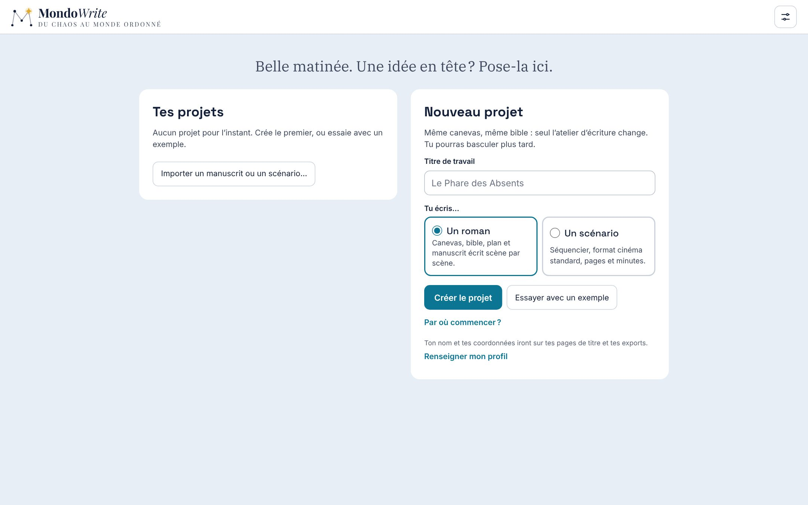
Remplis une fois pour toutes la fenêtre Toi, l’auteur, ouverte par Modifier mon profil… dans les Réglages (et, tant que ton profil est vide, par Renseigner mon profil sous Nouveau projet) : prénom, nom, nom de plume (facultatif : le nom signé sur tes œuvres s’il n’est pas ton nom), courriel, téléphone, adresse, et, si tu veux, ton Parcours et ta Filmographie ou publications (une œuvre par ligne). Ces informations restent sur ton appareil, jamais dans un projet. Elles servent à :
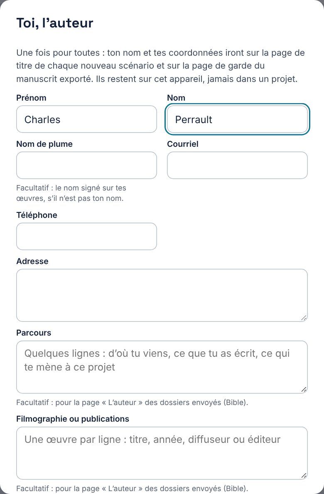
Les Réglages montrent ensuite ton nom d’auteur ; Modifier mon profil… rouvre la fenêtre, depuis la page des projets comme depuis un projet ouvert. La fenêtre d’export de la Bible y mène aussi, pour compléter la page « L’auteur » d’un dossier.
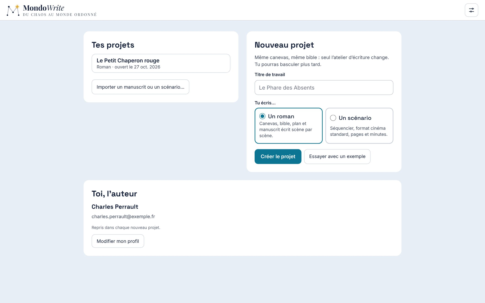
Si le dossier choisi contient déjà un projet MondoWrite, l’app l’ouvre au lieu de l’écraser. Créer n’écrase jamais rien.
Clique un projet de la liste pour l’ouvrir. Si l’ouverture dure (un projet iCloud ouvert pour la première fois sur l’appareil, dont les fichiers arrivent encore), une fenêtre montre où elle en est. Ouvrir un dossier… ouvre un projet qui n’est pas encore dans la liste (copié depuis un autre ordinateur, par exemple). Sur ordinateur, retirer un projet de la liste ne supprime aucun fichier : il reste dans son dossier. Sur iPhone et iPad, la croix supprime le projet après confirmation : ses fichiers sont effacés, et de tous tes appareils s’il est dans iCloud. Exporte-le d’abord en .zip si tu veux en garder une copie.
Essayer avec un exemple crée le projet Le Petit Chaperon rouge, sans rien te demander (dans iCloud ou ton dossier cloud s’il y en a un, sinon dans Documents › MondoWrite sur ordinateur) : des personnages, des lieux, des scènes reliées, un plan en deux chapitres, le texte complet du conte et trois gravures de Doré. C’est le meilleur moyen de découvrir l’app. Une Visite guidée en six étapes s’ouvre alors ; elle reste disponible dans les Réglages.
Grands exemples, sur la page des projets, propose des œuvres du domaine public plus complètes, illustrées, avec leur bible, leur plan et leur texte : Le Comte de Monte-Cristo (roman et série) et Le Chien des Baskerville (roman et long métrage), en français et en anglais. Elles se téléchargent depuis mondowrite.app (il faut une connexion) : Télécharger récupère le projet, vérifie qu’il est bien celui annoncé, puis l’ouvre comme un projet importé (sur ordinateur, tu choisis le dossier où le ranger). Les exemples dans une autre langue sont repliés sous Dans d’autres langues.
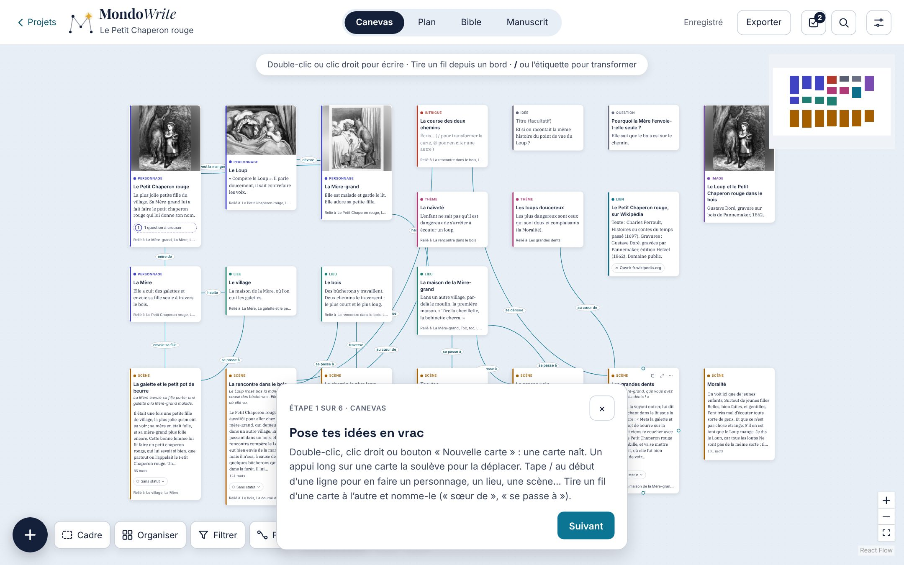
Importer un manuscrit ou un scénario… crée un projet à partir d’un fichier existant :
.docx), Markdown (.md) ou texte (.txt) : un projet roman. Les chapitres sont reconnus (titres Word, « Chapitre 3 », numéros seuls, sauts de page), les séparateurs comme * * * coupent les scènes, et le titre et « par Untel » en tête deviennent le titre du projet. Un prologue ou un épilogue d’une seule scène devient une page du livre..fountain) ou Final Draft (.fdx) : un projet scénario, avec ses cartes Scène, Personnage et Décor. Un fichier texte qui contient au moins deux en-têtes de scène (INT., EXT.) est aussi lu comme un scénario..pdf) : un scénario s’il contient des en-têtes de scène, sinon un roman. Pour un scénario, chaque élément est reconnu à son retrait (en-tête, action, personnage, didascalie, dialogue, transition) ; les numéros de page, les (À SUIVRE) et (SUITE) ajoutés par le logiciel d’origine sont retirés, et une réplique coupée par la page est recollée. Pour un roman, les paragraphes sont retrouvés à leurs alinéas, les titres à leur corps plus grand, et les titres courants, folios et lettrines sont mis de côté. Un PDF scanné (des images, sans texte) ne peut pas être importé. Relis le résultat : un PDF ne garde pas la structure d’origine, seulement sa mise en page.L’import se fait toujours dans un dossier vide : il ne remplace jamais un projet existant.
Une fois un projet ouvert, la barre du haut réunit tout ce qui sert partout :
Tu n’as jamais besoin d’enregistrer : l’app le fait toute seule, moins d’une seconde après ta dernière modification. Le bouton disquette force un enregistrement immédiat.
Quand la place manque (un iPad en paysage), la barre reste sur une seule ligne pour laisser la hauteur au travail : Projets et Exporter deviennent des icônes, et l’état de l’enregistrement passe dans le bouton disquette (un point tant que ce n’est pas enregistré). Les vues ne passent sous le logo que si cela ne suffit pas, en portrait par exemple. La durée et les pages d’un scénario sont dans la vue Scénario.
Il n’y a pas de bon ordre : MondoWrite se prend par le bout qui te ressemble. Voici sept chemins, du plus structuré au plus libre. Choisis le tien, et laisse le reste de côté tant que tu n’en as pas besoin.
Le tableau dit, pour chaque parcours, les vues qui comptent tout de suite (●) et celles qui serviront plus tard (○).
| Parcours | Canevas | Bible | Plan | Manuscrit ou Scénario | Carnet (iPhone) |
|---|---|---|---|---|---|
| L’architecte | ● | ● | ● | ○ | |
| Le jardinier | ○ | ○ | ○ | ● | |
| Le projet en développement | ○ | ● | |||
| Le scénariste de série | ● | ● | ○ | ● | |
| La réécriture | ○ | ○ | ● | ● | |
| Le roman documenté | ● | ● | ○ | ○ | |
| L’écrivain nomade | ○ | ○ | ● | ● |
Pour qui veut connaître sa fin avant la première ligne.
Le Carnet, l’export de la Bible.
Pour qui découvre son histoire en l’écrivant.
Les fiches à remplir et l’assistant personnage, qui serviront à la réécriture.
Pour qui doit convaincre avant d’écrire : un éditeur, un producteur, une commission.
Le Plan et le Manuscrit, jusqu’à la signature.
Pour qui a déjà un manuscrit ou un scénario écrit ailleurs.
Pour un roman historique, une enquête, un monde à inventer.
Le canevas est un grand tableau sans bords. On y pose des cartes, on les relie par des fils, on les regroupe dans des cadres. C’est le lieu du chaos fertile.
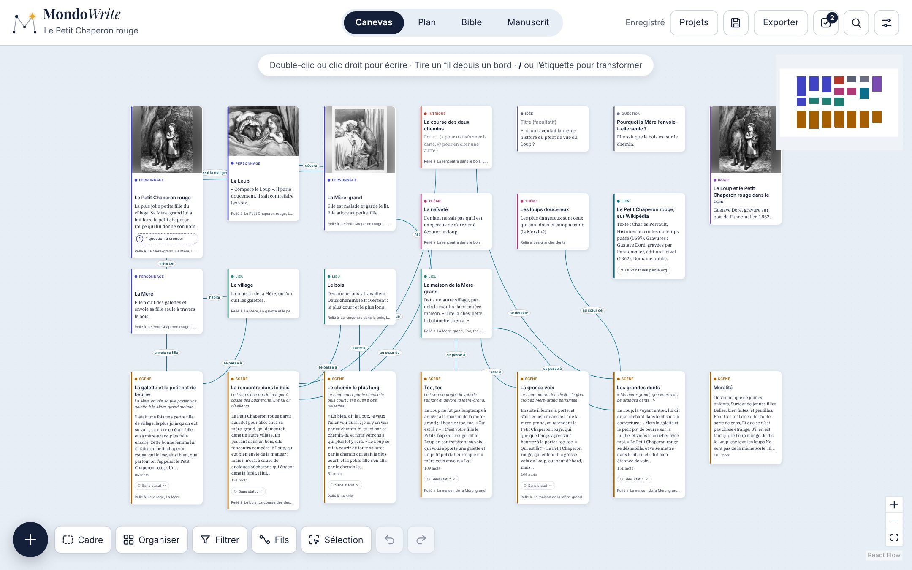
Pour te déplacer, fais glisser le fond, ou glisse deux doigts sur un pavé tactile (la molette d’une souris aussi, avec Maj pour aller de côté). Pour zoomer, pince le pavé tactile ou l’écran, ou garde Ctrl en tournant la molette : le zoom marche aussi au-dessus d’une carte, même les deux doigts posés dessus. Une carte dont le texte défile garde le geste tant qu’il reste du texte à faire défiler. Avec une souris, tu peux retrouver le zoom à la molette : dans les Réglages, Molette et trackpad (canevas), choisis La molette zoome (comme avant). Les boutons +, − et le cadre en bas à droite zooment et montrent tout le tableau. La mini-carte en haut à droite montre où tu te trouves ; chaque type de carte y a sa couleur.
Il y a quatre façons de créer une carte, pour la souris, le doigt et le clavier :
La carte naît là où tu as cliqué, jamais par-dessus une autre. Le curseur est dans son titre ; Entrée passe au texte de la carte.
La flèche à droite de Nouvelle carte ouvre la liste de tous les types : une carte vide, un personnage, un lieu, une scène, une intrigue, un groupe, un objet, un événement, une règle, un secret, un thème, une question, une image (photo libre ou image de l’appareil), un lien ou un document PDF.
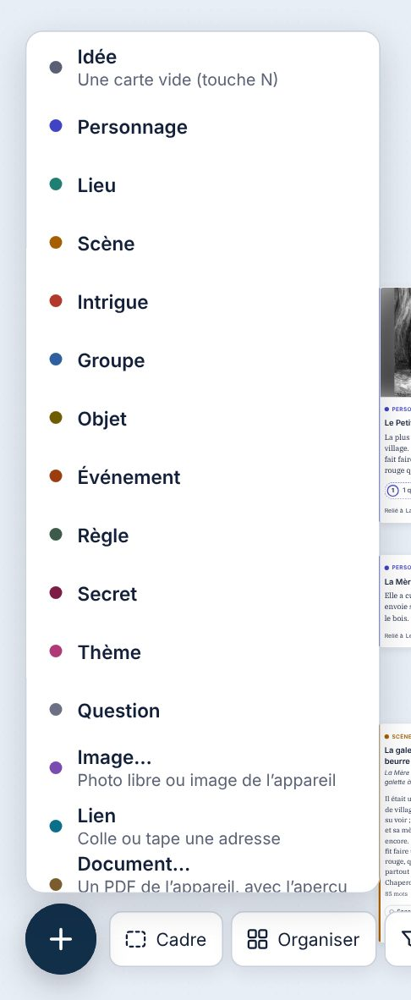
| Type | Ce qu’il représente |
|---|---|
| Idée | Le type de départ : une note en vrac, qui deviendra autre chose ou restera une idée. |
| Personnage | Une personne de l’histoire, avec sa fiche d’identité, son moteur et son arc dans la Bible. |
| Lieu (Décor en scénario) | Un endroit, avec son époque, son ambiance, ce qui s’y passe. |
| Scène | Une scène du récit. Son texte est celui du Manuscrit ou du Scénario. |
| Intrigue | Une ligne d’histoire (principale, secondaire, sentimentale…) avec sa question dramatique. |
| Épisode (scénario) | Un épisode d’une série : son numéro, son synopsis, son personnage pivot. Les fils vers les intrigues et les personnages disent qui et quoi le traversent. |
| Groupe | Une famille, un clan, une entreprise, un équipage : ce qu’il veut, comment il fonctionne, ses moyens. Ses membres sont les personnages reliés par un fil. |
| Objet | Une chose qui compte dans l’histoire : d’où elle vient, à quoi elle sert, ce qu’elle représente, où elle se trouve. |
| Événement | Ce qui est arrivé, souvent avant le récit : quand, ce que ça a changé, ce qu’on en raconte. |
| Règle | Une règle du monde (une magie, une loi, un usage) : à quoi elle s’applique, ses exceptions, ce qu’elle coûte, ce qui arrive à qui l’enfreint. |
| Secret | Ce que certains cachent : la vérité, l’enjeu, les indices semés, quand et comment il éclate. Ceux qui le savent sont les personnages reliés par un fil. |
| Thème | Une idée qui traverse le récit. |
| Question | Une chose à creuser plus tard. Les questions sont réunies dans « À creuser ». |
| Image, Lien, Document | Tes sources : une image, une page web, un PDF, avec l’auteur et la date. |
Tape / au début d’une ligne du texte de la carte (ou dans un titre vide) : le menu Transformer en… s’ouvre. Choisis avec les flèches et Entrée, ou à la souris. Au doigt ou à la souris, tu peux aussi toucher l’étiquette du type, en haut à gauche de la carte. Changer de type ne perd rien : le texte et les fils restent.
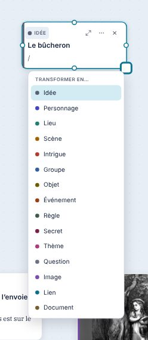
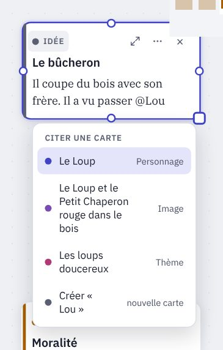
Le texte d’une carte se met en forme comme un traitement de texte léger. Sélectionne un passage : une petite barre propose gras, italique, barré, intertitre, liste, case à cocher, citation et À reprendre (un surlignage pour les passages à retravailler). Tu peux aussi écrire en Markdown, qui se transforme à la frappe : **gras**, *italique*, # Titre, - liste, [ ] pour une case à cocher. Un texte Markdown collé est mis en forme de la même façon. Dans le texte d’une scène (le Manuscrit, la carte Scène agrandie), un tiret en début de ligne reste un tiret de dialogue : une liste s’y ouvre avec * .
Une carte dont le texte dépasse une certaine hauteur se replie, avec Plus de détails pour la déplier ; elle reste dépliée pendant que tu écris.
Tape @ (ou [[, comme dans Obsidian) suivi du début d’un nom : la liste des cartes du projet apparaît. Choisis-en une : son nom s’insère comme une mention, et un fil se tire tout seul entre les deux cartes. Si la carte n’existe pas encore, Créer « … » la crée sur-le-champ. Ça marche aussi dans le texte d’une fiche de la Bible et dans une carte agrandie.
Une mention suit sa carte : si tu renommes la carte, le nom change partout où elle est citée ; si tu la supprimes, la mention redevient un simple texte.
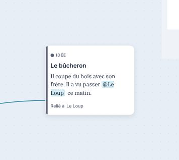
Survole une carte : un petit rond apparaît au milieu de chaque bord. Tire depuis l’un d’eux jusqu’à une autre carte (n’importe où sur la carte) : un fil les relie. Clique le fil pour lui donner une étiquette, la nature du lien : « mère de », « se passe à », « soupçonne »… Ces étiquettes réapparaissent dans la Bible (Relié à) et sur la carte des relations. Pour retirer un fil, clique-le puis Délier.
Un fil a aussi sa fiche. Dans la Bible, touche une carte de Relié à : trois cases s’ouvrent sous la liste, Leur histoire, Ce qui se joue entre eux et Comment ça évolue. Un point marque les fils qui ont une fiche. Ce qui se joue entre deux personnages suit leur relation dans le dossier.
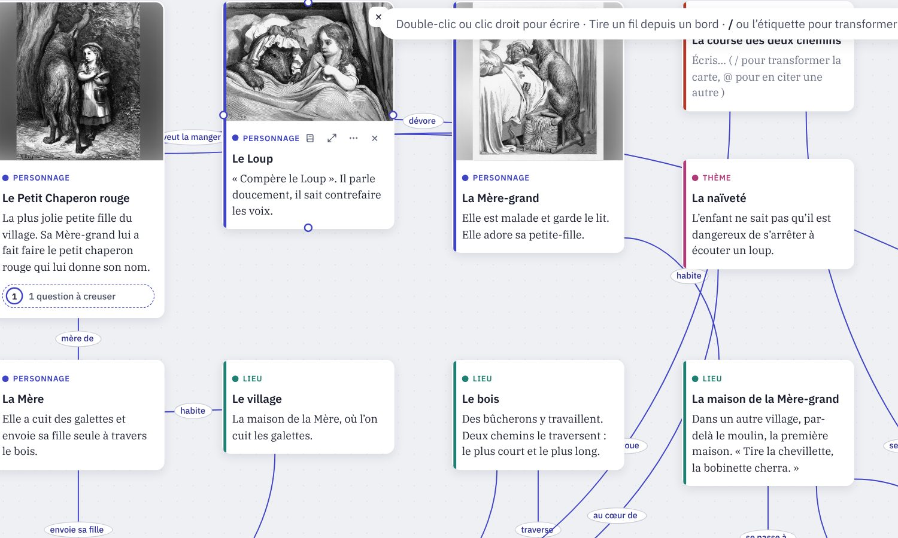
Au pied de chaque carte reliée, une ligne discrète dit à quoi elle est reliée : Relié à Le Loup, La Mère-grand… Touche cette ligne pour la déplier, puis un nom : le canevas se centre sur cette carte et la met en avant.
Quand les fils se croisent trop, le bouton Fils (en bas, à côté de Filtrer) les masque tous. Rien n’est supprimé, et le choix est gardé avec le projet. Les cartes disent alors en clair à quoi elles sont reliées ; touche Relié à sur une carte pour afficher ses seuls fils, touche-le encore pour les masquer. Fils de nouveau les remet tous.
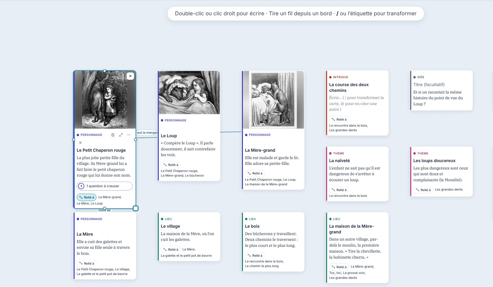
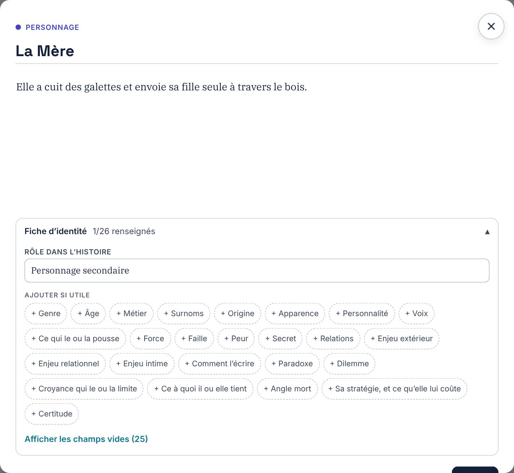
Le bouton ⋯ (ou un clic droit hors du texte de la carte) propose :
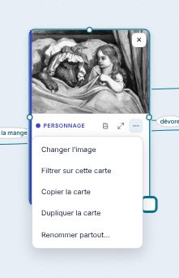
Le bouton de fiche (la petite page) d’une carte typée ouvre sa fiche dans la Bible.
Le canevas sert aussi à garder tes sources sous la main :
.md ou .txt déposé devient une carte (une note Obsidian garde son titre et son type).Collé sur une carte (clique son bord, puis Ctrl V), le texte va dans cette carte, à la fin : dans ses notes, ou dans le texte de la scène pour une carte Scène. Aucune carte n’est créée.
Choisis une ou plusieurs cartes, puis Ctrl C et Ctrl V : les copies arrivent là où est le pointeur, avec leur fiche, leurs images, le texte des scènes et les fils entre elles. Ctrl D, ou Dupliquer la carte dans le menu ⋯, pose une copie juste à côté. Dans une autre app, le collage donne le titre et le texte des cartes.
Une carte qui change de type ne perd rien : une Scène devenue Idée garde son synopsis et son texte dans ses notes, et un long texte dans une carte qui devient Scène devient le texte de la scène (une ligne courte devient son synopsis).
Image… ouvre la fenêtre Photos libres : cherche un mot (« phare, tempête, forêt la nuit… ») et choisis une photo. Trois sources : Openverse, sans clé, qui réunit des images sous licence libre (Flickr, Wikimedia, musées) ; Pixabay et Unsplash, qui demandent une clé gratuite, gardée sur ton appareil. L’auteur, la page et la licence de la photo sont notés dans la fiche de la carte. Choisir une image sur l’appareil… prend un fichier de ton ordinateur.
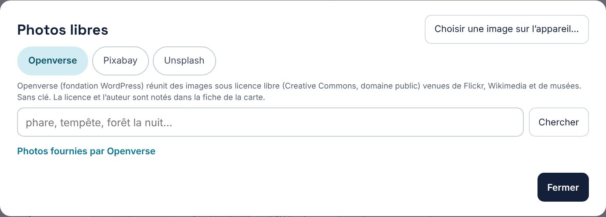
Un cadre regroupe des cartes sans rien leur imposer : « La famille », « Acte I », « Recherche ». Sélectionne des cartes et appuie sur C (ou le bouton Cadre) : le cadre les entoure. Donne-lui un nom dans son en-tête. Déplacer le cadre (par son en-tête, ou par un appui long sur un endroit vide de son intérieur, au doigt comme à la souris) déplace les cartes qui sont dedans ; tire ses bords pour le redimensionner. Supprimer un cadre ne supprime pas ses cartes.
Sans cartes sélectionnées, C pose un cadre vide dans un espace libre, près du centre de la vue. Une nouvelle carte ne se pose jamais à cheval sur un cadre : créée dans un cadre (double-clic, clic droit), elle y reste, à côté de ses cartes ; créée ailleurs, elle va dans un espace vide.
Le cadenas de l’en-tête verrouille le cadre : ni lui ni ses cartes ne bougent plus, même avec Organiser. Les cartes restent modifiables, reliables et supprimables.
Les cadres ont une hiérarchie : un cadre posé dans un autre a un titre plus petit, et un trait en pointillés. Un cadre posé dans un cadre de premier niveau (un chapitre dans une case, une case dans un cadre « Acte I » que tu as tracé) passe au niveau en dessous, sans rien régler. Les cases d’un gabarit de structure ont le plus grand titre, un trait de couleur et leur rang à côté du nom (« Case 3 sur 15 »). Quand tu recules, les titres grandissent et passent au-dessus des cartes : vu de loin, le canevas se lit comme un sommaire.
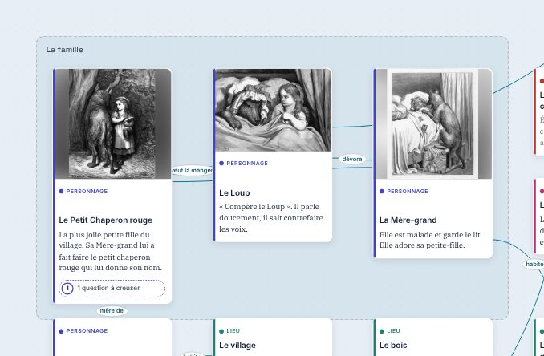
À la souris : Maj + glisser entoure des cartes ; Ctrl + clic ajoute une carte à la sélection ; Ctrl A sélectionne tout, Échap désélectionne. Au doigt : le bouton Sélection fait que glisser entoure au lieu de déplacer la vue. Une barre en haut propose alors Encadrer, Corbeille et Désélectionner ; les cartes choisies se déplacent ensemble.
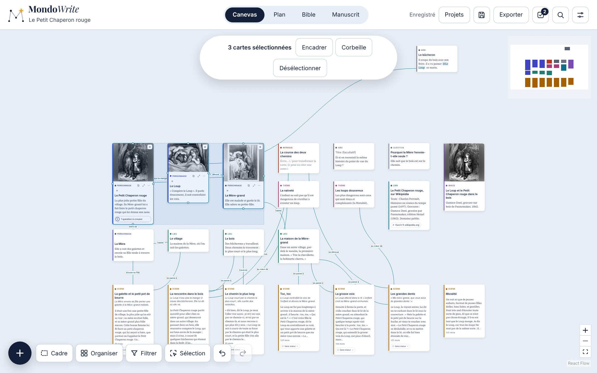
Quand tout déborde, Organiser range toutes les cartes en cadres : personnages, lieux, intrigues, thèmes, questions, images, liens, idées en vrac, et les scènes par case du gabarit et par chapitre, reliées dans l’ordre du récit par des fils « puis ». L’ensemble forme un bloc compact, au format de l’écran : plus il y a de cartes, plus les rangées de scènes sont longues, et les cadres se rangent sur cette largeur au lieu de s’étirer en une longue bande. Un chapitre réparti sur plusieurs cases porte son titre dans la première et « (suite) » dans les autres. Les cadres verrouillés restent en place. Une seule annulation (Ctrl Z) remet tout comme avant.
Toutes les cases du gabarit ont leur cadre, même vides (« Rien encore ici ») : on voit d’un coup d’œil les trous de la structure. Dépose une scène dans le cadre d’une case pour l’y ranger, à la place où tu la lâches (tiens la carte par son en-tête) ; le Plan, le séquencier et le Manuscrit suivent aussitôt. Dans un scénario, les cases sont celles du gabarit choisi dans le séquencier.
Ensuite, le canevas suit le récit tout seul : déplacer une scène ou un chapitre dans le Plan, le Manuscrit, le séquencier ou la liste des scènes du Scénario la déplace aussi sur le canevas, sans repasser par Organiser. Un canevas rangé est rangé de nouveau ; sinon, les scènes échangent seulement leurs places et le reste ne bouge pas.
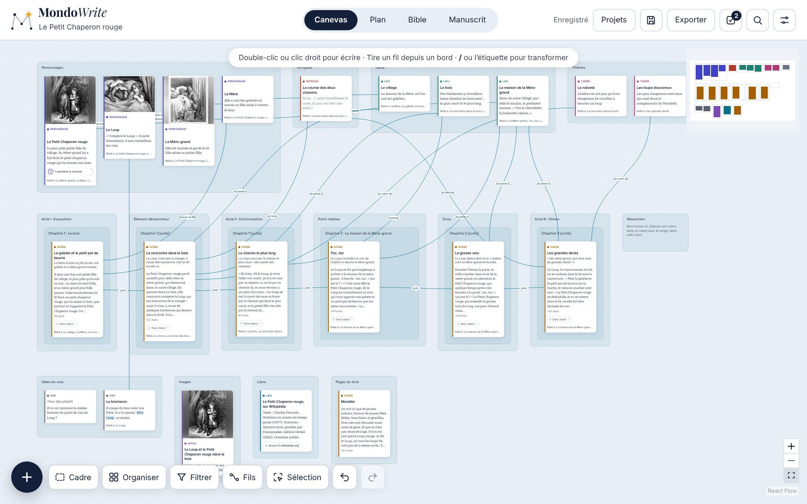
Filtrer masque des types de cartes (rien n’est supprimé) : décoche les types que tu ne veux plus voir. Un bandeau « Filtre actif » le rappelle en haut (sur téléphone, c’est l’entonnoir du bouton qui devient plein) ; Tout afficher rétablit tout, et Tout masquer décoche tous les types d’un coup (pratique pour n’en garder qu’un ou deux).
La loupe (Ctrl F) cherche dans les titres et le texte des cartes, sans tenir compte des majuscules ni des accents, et aussi dans le texte des scènes (« dans le texte »). Choisis un résultat : le canevas se centre sur la carte et s’en approche (100 %, sans jamais reculer), et la met en avant (les autres s’estompent ; Échap ou un clic sur le fond rétablit tout), ou la scène s’ouvre dans le Manuscrit.
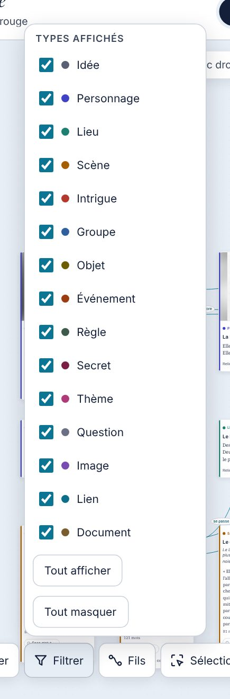
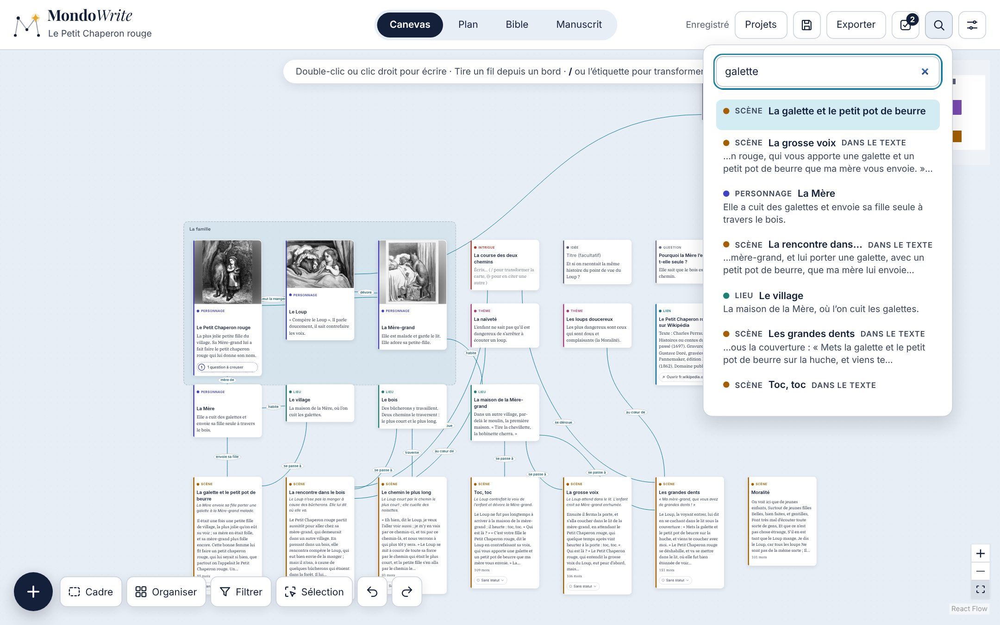
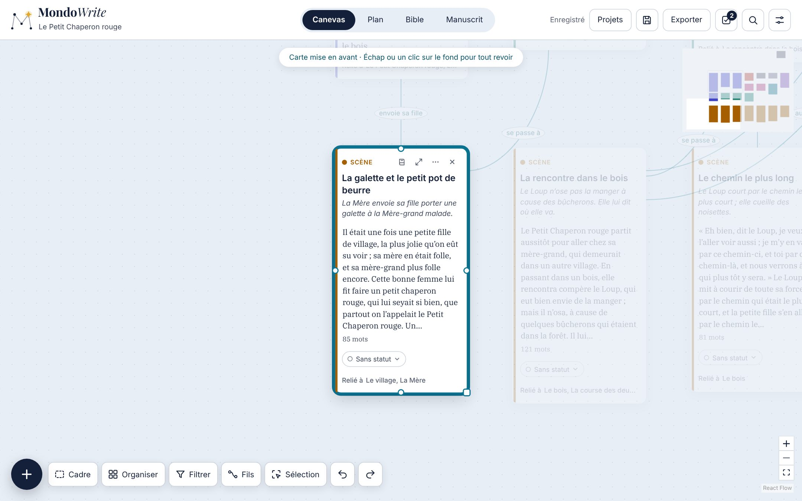
Annuler et Rétablir (en bas, ou Ctrl Z et Ctrl Maj Z) défont et refont les changements du canevas, du plan et de la corbeille. Dans un texte, ces raccourcis annulent la frappe.
Supprimer une carte (le × de la carte, ou Suppr) la met à la corbeille, avec sa place et ses fils. Un message propose aussitôt Annuler. La corbeille s’ouvre depuis les Réglages (Corbeille (n)) : Remettre replace la carte, Supprimer l’efface pour de bon. Le texte d’une scène n’est jamais perdu avec sa carte.
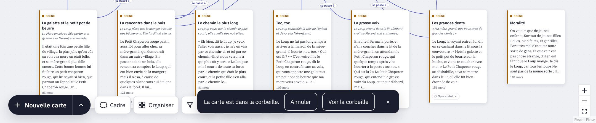
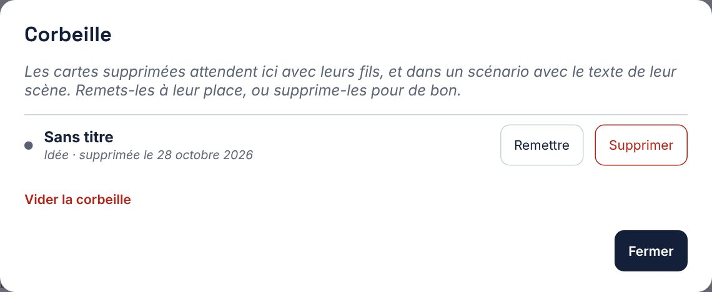
Le bouton À faire (Ctrl Maj L) rassemble tout ce qui attend : les cases non cochées de tes cartes, les passages marqués À reprendre dans le manuscrit, et les questions À creuser (questions gardées dans une fiche de personnage et cartes Question). Une tâche reste là où tu l’as posée : cocher dans le panneau la coche dans sa carte.
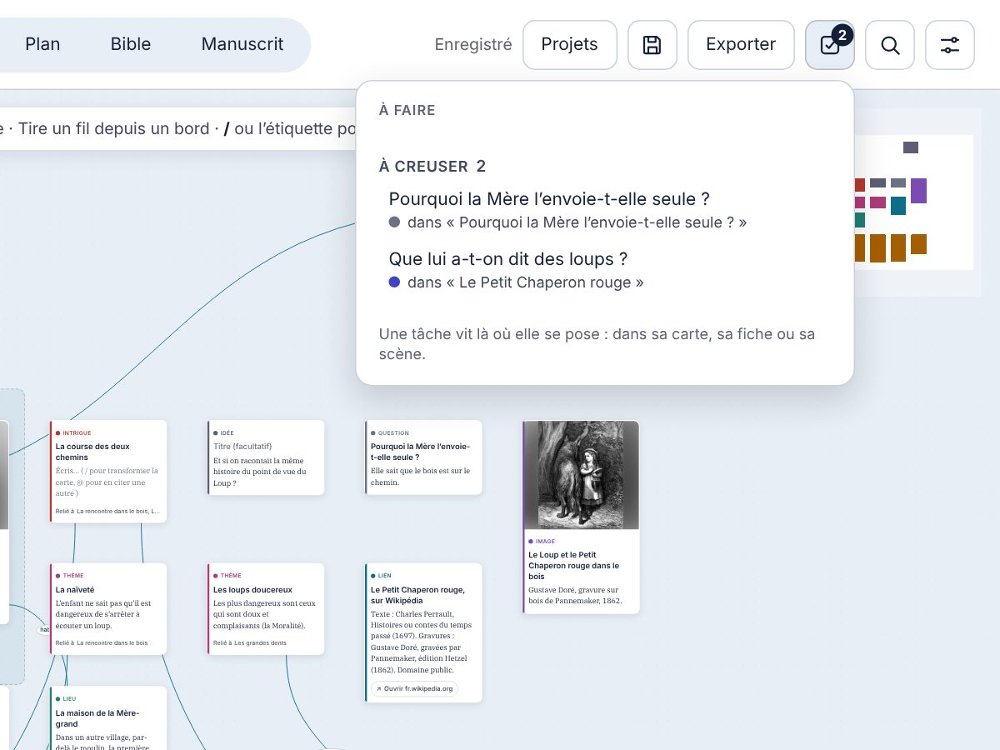
La Bible rassemble les fiches de ton monde. Elle se construit toute seule : chaque carte typée du canevas y a sa fiche, rangée par type. Rien n’y est recopié : modifier une fiche modifie la carte.
À gauche, le sommaire range les rubriques en cinq parties numérotées, dans l’ordre d’un dossier : 1 · Présentation (le projet, les thèmes), 2 · Personnages, 3 · Univers (les lieux), 4 · Structure (intrigues et scènes) et, à part, 5 · Pour vous (questions à creuser, images, liens, documents, idées en vrac) : ce qui ne sert qu’à toi, jamais imprimé dans un dossier envoyé. Chaque rubrique montre son nombre de fiches ; un clic y mène. Le bouton + de chaque rubrique y crée une fiche (et donc une carte sur le canevas). Chaque fiche se replie par sa flèche, en haut à droite, pour ne garder que son titre ; Tout replier et Tout déplier font de même pour toute la rubrique. L’appareil s’en souvient d’une ouverture à l’autre, et une fiche ouverte depuis le canevas se déplie d’elle-même. Choisir et ranger les rubriques permet de masquer des rubriques et de changer leur ordre à l’intérieur de leur partie, avec les flèches ; ce réglage vaut aussi pour l’export de la Bible en Word et en Markdown.
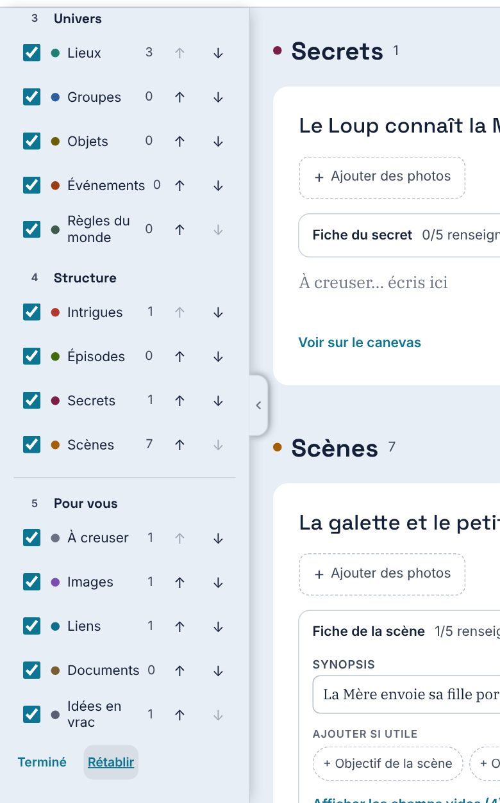
La Bible s’ouvre sur la couverture : la carte d’identité de ton livre, utile pour le présenter à un éditeur, un agent ou un producteur.
Questionner, en haut à droite de la couverture, pose une question à la fois pour chaque champ vide (« Qui veut quoi, qu’est-ce qui l’en empêche, et que risque-t-il ou elle ? » pour la logline). Ta réponse va telle quelle dans le champ, avec Ajouter ; Une autre passe à la question suivante. Comme l’assistant personnage, il ne répond jamais à ta place.
Dans un scénario, la couverture suit la pastille Format : tant qu’il n’est pas choisi, elle ne devine rien et t’invite à le choisir. Pour une série, elle a en plus une partie repliable, Écrire la série, pour tout ce qui aide un producteur à y croire et un scénariste à rejoindre l’écriture : Pourquoi maintenant, Pourquoi moi, La promesse (ce que le spectateur vient chercher à chaque épisode), Ce qu’elle n’est pas, L’arène, Avant le pilote (ce qui s’est passé avant le premier épisode), Ce qui les tient ensemble (pourquoi tes personnages ne peuvent pas se séparer), La mécanique (le conflit central qui fabrique les épisodes), Un épisode type, La question de la saison, Où finit la saison, Les saisons suivantes, À faire, À éviter, Pistes pour la suite et Autres supports (podcast, roman graphique, jeu : il ne sort que dans un dossier envoyé). Deux pastilles de plus sous le titre : Forme (bouclée, feuilletonnante, hybride) et Pilote (d’installation, ou pilote type).
Pour une mini-série, les mêmes rubriques, sans les saisons suivantes : la question et la fin portent sur toute la mini-série.
Pour un film (long métrage, court métrage, téléfilm), la partie s’appelle Écrire le film : Pourquoi maintenant, Pourquoi moi, Ce qu’il n’est pas, Note de réalisation (ton regard : l’image, le son, le rythme), Faisabilité, À faire, À éviter et Pistes à garder. Le Traitement (le film raconté en entier, en 5 à 10 pages) est en option : Ajouter un traitement le fait apparaître. La faisabilité est déjà remplie d’après le scénario (scènes, pages, décors, intérieur et extérieur, jour et nuit, rôles parlants, décors principaux) : modifie-la et complète-la (époque, effets, cascades) ; Reprendre les chiffres du scénario la recalcule. Un film n’a ni épisodes ni pastilles Forme et Pilote. Une rubrique déjà remplie qui n’est pas celle du format choisi passe dans Autres rubriques : rien n’est perdu.
Les épisodes sont des cartes Épisode, rangées dans la Structure de la Bible, dans l’ordre de leur numéro. Nouvel épisode, sur la couverture, en crée un. Chacun a un synopsis de trois ou quatre phrases, un Personnage pivot, choisi parmi tes personnages, une Saison (1 si rien n’est écrit ; dès deux saisons, les numéros s’écrivent « 2.3 ») et un Repère facultatif, Mi-saison ou Fin de saison ; tire un fil de l’épisode vers les intrigues qui le traversent et les personnages qui y paraissent. Un projet qui avait écrit ses épisodes sur la couverture, un par ligne, les retrouve en cartes à l’ouverture.
Sous la note d’intention, un repère discret donne sa longueur : une page fait environ 450 mots.
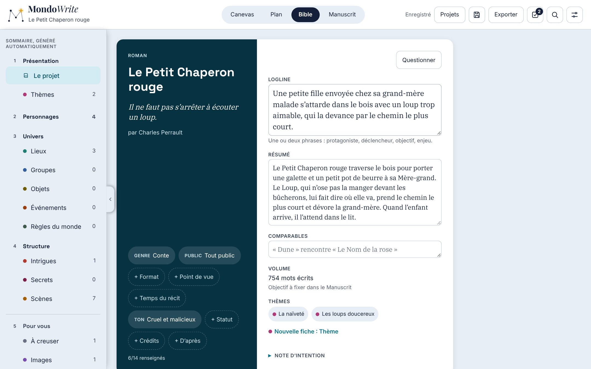
Chaque personnage a une fiche qui va à l’essentiel :
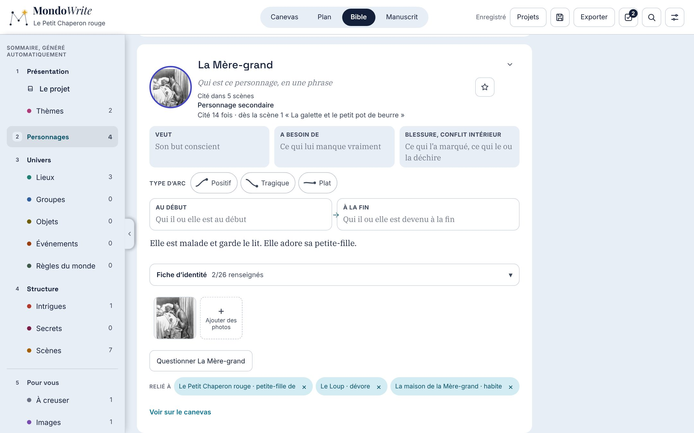
Questionner … ouvre l’assistant, qui t’aide à creuser un personnage en te posant des questions, une à la fois. Il ne répond jamais à ta place.
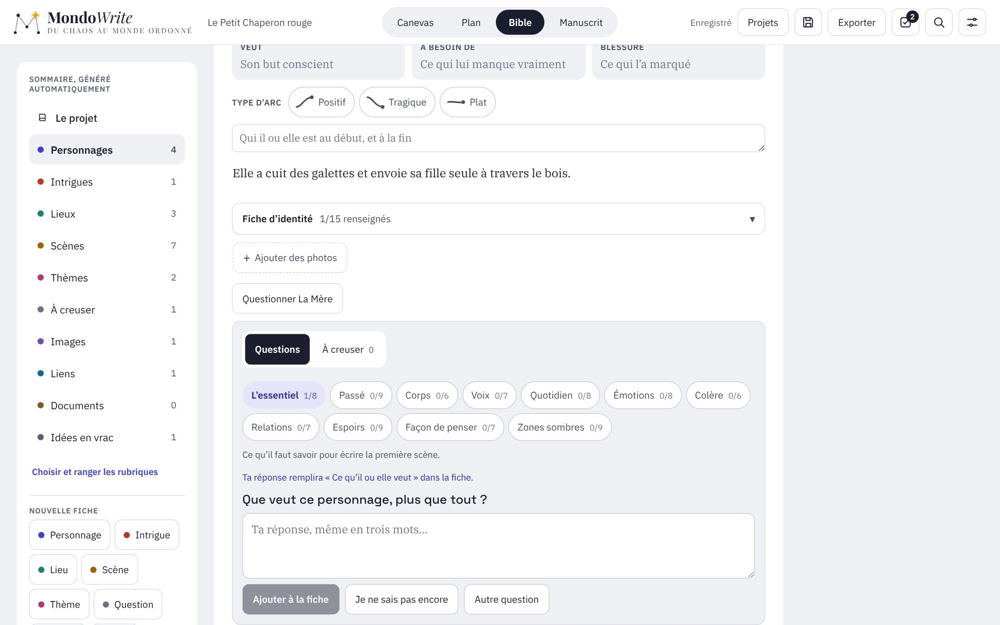
Dans la rubrique Personnages, l’onglet Relations dessine les personnages et les fils qui les relient sur le canevas, avec leurs étiquettes, puis la liste des relations. Tire un fil entre deux personnages et nomme-le (« sœur de », « trahit ») : il apparaît ici. Touche un portrait pour ouvrir sa fiche.
Un fil s’épaissit avec le nombre de scènes que les deux personnages partagent, et la liste l’écrit en toutes lettres (« 3 scènes ensemble »). Un fil en pointillé relie deux personnages qui ne se croisent dans aucune scène : une relation dont le récit ne montre encore rien.
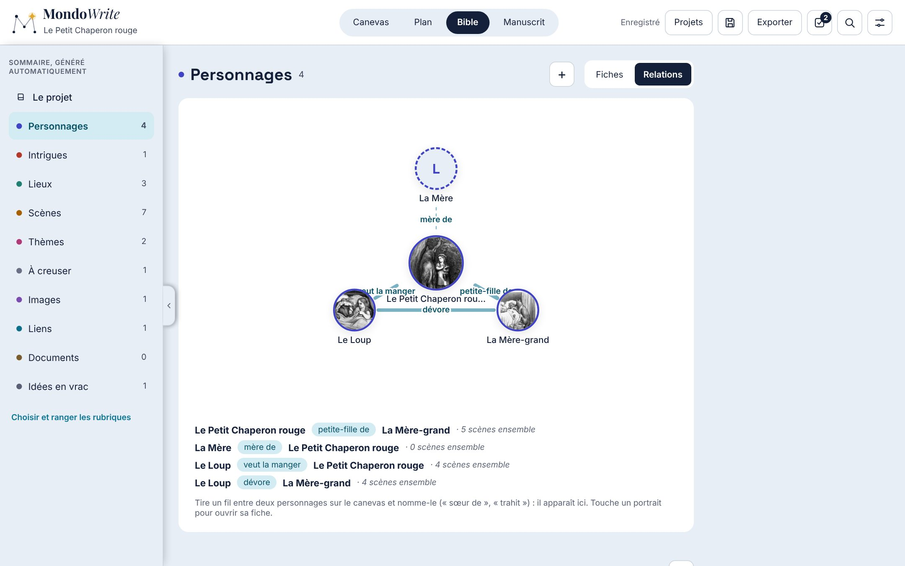
Sous le nom de chaque personnage, une ligne discrète donne ses scènes (et, dans un scénario, ses répliques et sa part du temps de parole) ; sous celui de chaque lieu, ses scènes (et pour un décor, ses pages, intérieur ou extérieur, jour ou nuit). Tout est relu dans ton texte. Le détail, les tris et l’export en CSV sont dans la fenêtre Statistiques, ouverte depuis le Manuscrit ou le Scénario (voir « Les statistiques du projet »).
Chaque type a sa fiche, repliée sous le texte :
Toutes les fiches, sauf celle d’une scène, ont une case Certitude : Établi, Provisoire ou À explorer. Elle t’aide à savoir sur quoi tu peux bâtir ; elle n’apparaît jamais dans un dossier envoyé.
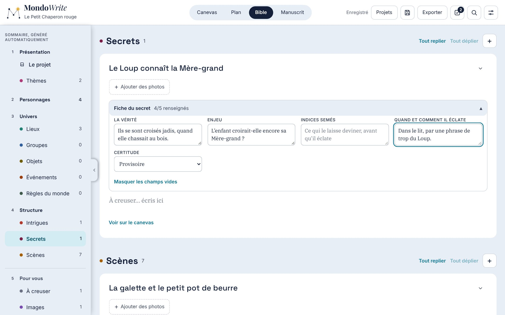
Les questions À creuser et les idées en vrac ont aussi leur rubrique. Voir sur le canevas, en bas de chaque fiche, montre sa carte, mise en avant : les autres s’estompent jusqu’à un clic sur le fond ou Échap.
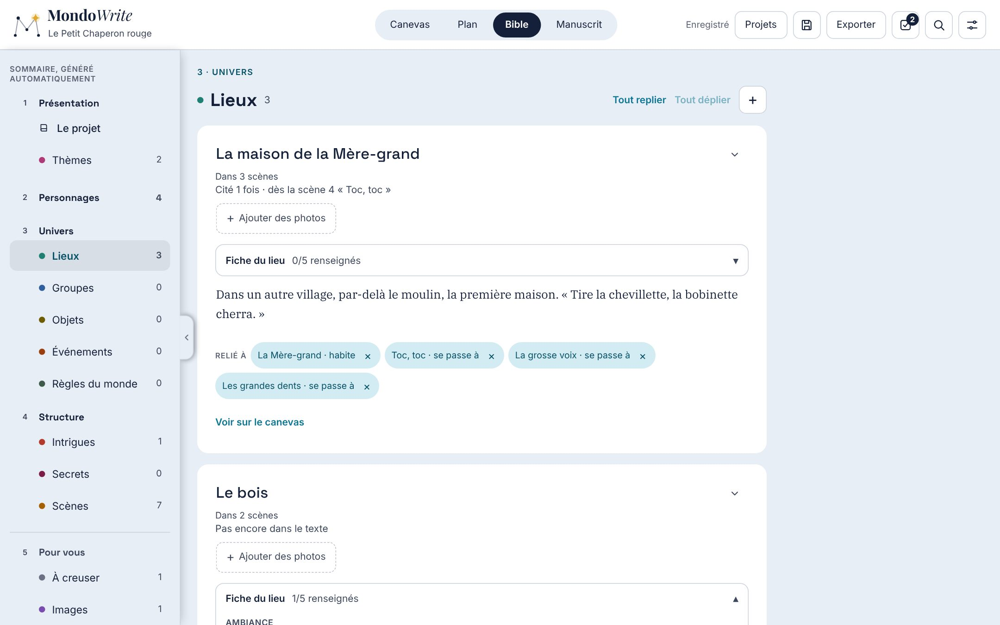
Le Plan donne une forme au récit : l’ordre des scènes, leur place dans une structure, leurs chapitres. Il ne contient que des scènes : celles du canevas, de la Bible ou du Manuscrit, toujours les mêmes.
Le menu Gabarit propose une structure, avec une phrase qui l’explique :
Chaque case a son nom et une aide (« L’événement qui rompt l’équilibre »), et une place habituelle dans le récit, que montre le ruban du récit (voir le Manuscrit). Changer de gabarit ne perd aucun rangement : chaque gabarit garde le sien. Chaque case s’ouvre sur son rang (« Case 3 sur 15 »), un grand titre et le nombre de ses scènes ; les chapitres viennent dessous, en plus petit, comme sur le canevas.
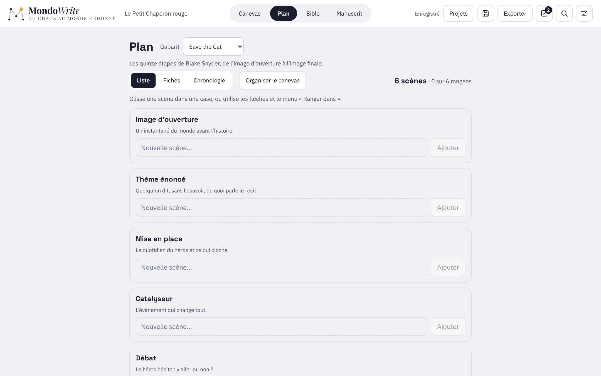
Le Cercle de Dan Harmon se dessine aussi en cercle : le monde connu en haut, l’inconnu en bas, le nombre de scènes de chaque étape. Une étape vide est en pointillé ; touche une étape pour aller à sa case.
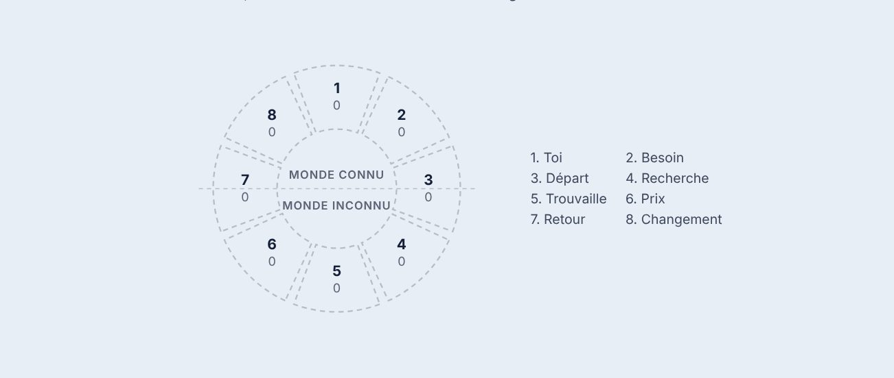
Dans le menu Gabarit, Créer un gabarit… ouvre la liste des cases, préremplie avec celles du gabarit en place : renomme-les, écris ce qu’on y met, change leur ordre, retire-en, ajoute-en. Les scènes suivent leur case, même renommée. Garder dans mes gabarits le propose ensuite dans tous tes projets, roman ou scénario ; Modifier les cases… le reprend plus tard. Une case retirée renvoie ses scènes dans « À placer » (dans un scénario, dans la case d’avant).
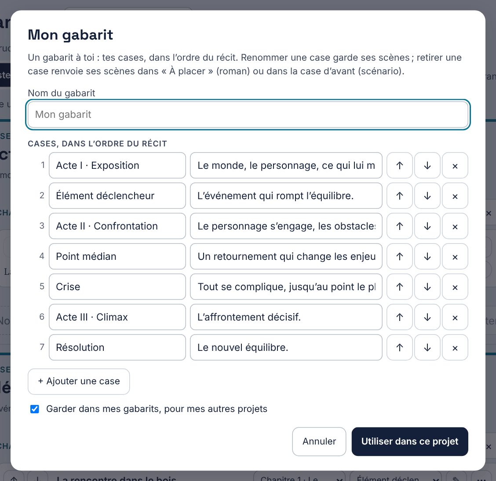
Dans la présentation Liste, chaque scène montre son titre, son synopsis, son statut et son chapitre. Pour la déplacer :
Les scènes pas encore rangées attendent dans À placer, dans l’ordre du canevas. Nouvelle scène… en bas de chaque case crée une scène directement à cette place (et sa carte sur le canevas). Le bouton à la flèche (↗) montre la carte sur le canevas, le crayon (✎) ouvre la scène dans le Manuscrit, la corbeille la supprime.
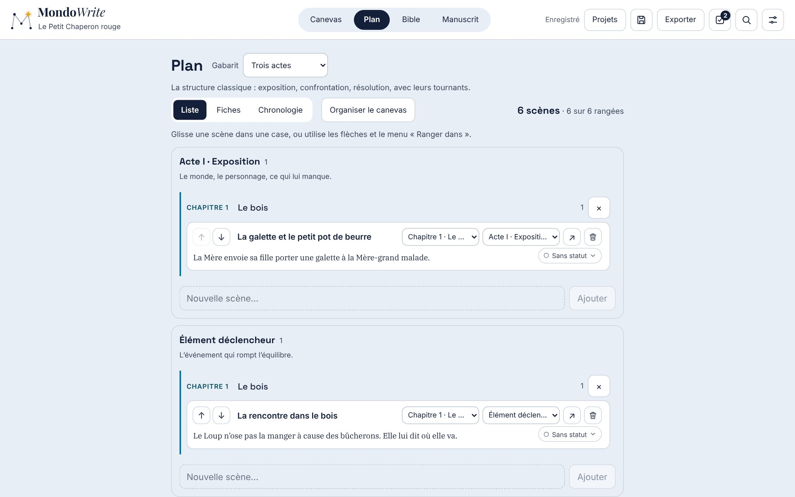
Les chapitres découpent le récit. Le menu Chapitre d’une scène propose Nouveau chapitre à partir d’ici ; chaque chapitre peut avoir un titre (facultatif). Les chapitres sont numérotés tout seuls, d’après leur place. Supprimer un chapitre rend ses scènes au chapitre précédent : aucune scène n’est supprimée. Dans le Manuscrit, on crée aussi un chapitre au clavier (voir plus loin).
Trois présentations du même plan :
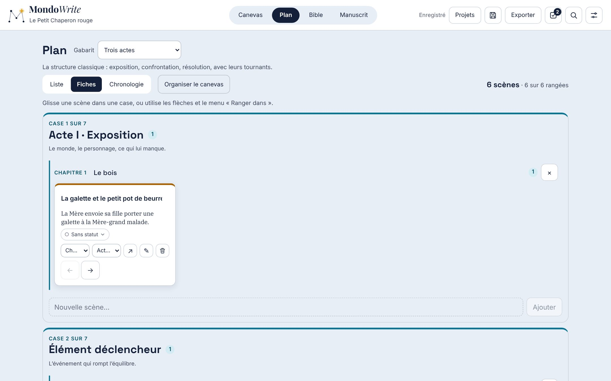
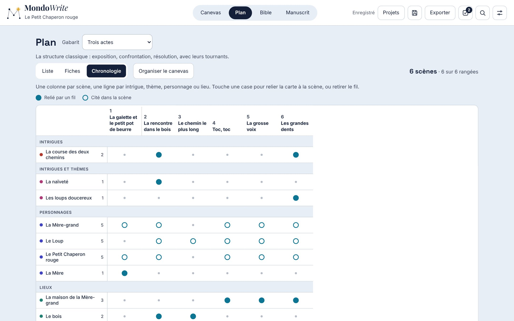
Organiser le canevas range aussi le canevas d’après le plan : une case de gabarit, puis un chapitre, par cadre.
Le Manuscrit est le lieu où l’on écrit, une scène à la fois, dans l’ordre du plan, sur une page mise en forme comme celle d’un livre.
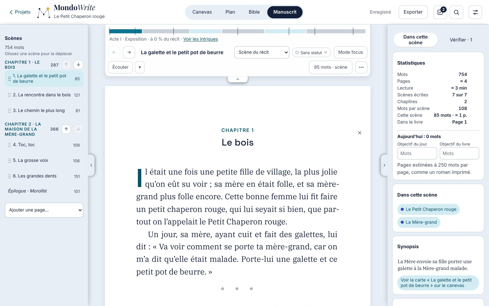
Dès qu’un gabarit est choisi, une bande fine en tête de la barre (et sous la barre du Scénario) montre la structure de ton texte tel qu’il est : chaque case prend la place que ses scènes occupent vraiment, en mots (en pages dans un scénario). Un trait fin marque où chaque case commence d’ordinaire dans cette structure : l’écart se voit sans rien imposer. Touche une scène du ruban pour y aller ; la ligne dessous dit dans quelle case tu es et à quel endroit du récit. Tant que le texte est peu écrit, chaque scène compte pour une part égale.
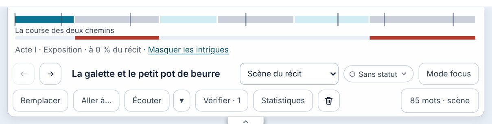
À gauche, toutes les scènes du livre, par chapitre, avec leur nombre de mots. Un clic ouvre une scène. Pour en déplacer une, glisse-la (dans la moitié haute d’une autre scène pour la mettre avant, dans la moitié basse pour la mettre après), ou utilise ses flèches ou Alt ↑ ↓. Elle prend le chapitre et la case de sa nouvelle voisine. Un chapitre entier se déplace aussi, en glissant son titre ou avec ses flèches.
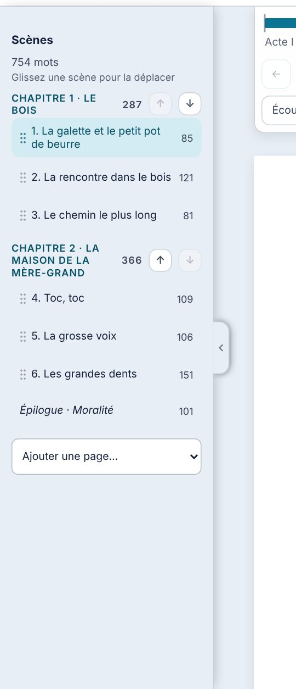
Au-dessus de la page, une barre discrète : les flèches de scène, le titre de la scène, son type de page, son statut, et les boutons Chutier, Mode focus, Remplacer et la corbeille. Le numéro et le titre du chapitre sont dans la marge du haut ; la première lettre d’un chapitre devient une lettrine quand tu n’écris pas dans ce paragraphe. Le synopsis de la scène apparaît en filigrane dans une scène encore vide, comme une note de plan.
Zoom de la page. Ctrl + et Ctrl − agrandissent ou réduisent la page entière, sans changer sa mise en page ni ses coupures ; Ctrl 0 revient à la taille normale. Le réglage est aussi dans les Réglages (Zoom de la page) et, sur Mac, dans le menu Présentation. Il vaut aussi pour la feuille du Scénario. Agrandie au-delà de la fenêtre, la page défile de côté.
Tu peux découper le récit sans quitter le clavier :
Un message Annuler s’affiche dix secondes après chaque coupure.
Un livre publié a aussi des pages hors du récit. Le menu Ajouter une page…, sous la colonne des scènes, en crée : Page de titre, Mentions légales, Dédicace, Épigraphe, Prologue, Épilogue, Remerciements, À propos de l’auteur. Elles se placent d’elles-mêmes au début ou à la fin du livre et se composent chacune à sa façon (une dédicace centrée en italique, des mentions légales en petits caractères…). Le menu de type de page, dans la barre, transforme une scène en page du livre et inversement.
Chaque scène a un statut : Brouillon, À revoir ou Terminée. On le choisit partout où l’on voit la scène (la barre du Manuscrit, la carte, la Bible, le Plan), et une pastille de couleur le rappelle dans les listes. Les statistiques comptent les scènes terminées.
La colonne de droite affiche les statistiques du livre : mots, pages (estimées à 250 mots par page, comme un roman imprimé), temps de lecture, scènes écrites, chapitres, mots par scène, et pour la scène en cours son nombre de mots et sa place dans le livre. Fixe un Objectif du jour et un Objectif du livre en nombre de mots : la progression du jour, le nombre de jours d’affilée et l’avancée du livre s’affichent.
Dessous, Dans cette scène liste les personnages et les lieux cités dans le texte (un clic montre leur carte), puis le Synopsis de la scène, modifiable sur place.
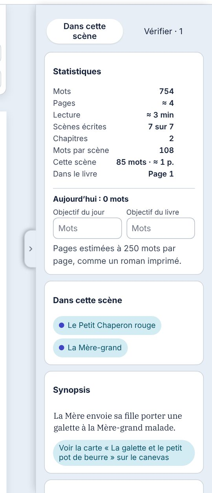
Pour créer un personnage ou un lieu sans quitter ta phrase, tape / suivi du nom, n’importe où dans le texte (après un espace, une parenthèse ou un guillemet) : « /Phare des vœux pieux » accepte les noms de plusieurs mots. Le menu propose Personnage ou Lieu ; la fiche est créée en arrière-plan, le nom reste du texte ordinaire (aucun lien n’est laissé dans le manuscrit) et tu continues ta saisie. Tu complèteras la fiche plus tard dans la Bible.
Autre façon : sélectionne un nom déjà écrit et tape /, ou touche l’un des deux boutons Personnage et Lieu de la petite barre qui apparaît sur la sélection.
Un passage dont tu n’es pas sûr n’a pas à être supprimé. Sélectionne-le et appuie sur Ctrl Maj K (ou touche le bouton du chutier dans la barre de sélection, au doigt) : il quitte le texte et rejoint le Chutier, dans la colonne de droite, avec la scène d’où il vient. Remettre à sa place le replace exactement là où il était ; si le texte a changé entre-temps, il revient à l’endroit le plus proche, et à la fin de la scène en cours si la scène d’origine n’existe plus. Le chutier est gardé dans le projet. Un passage doit se trouver dans une seule scène.
La colonne des scènes et la colonne de droite se replient : une poignée sur le bord de la page les ouvre et les ferme, et MondoWrite retient ton choix. Sur un écran étroit (iPad en hauteur, iPhone), elles deviennent des tiroirs qui se superposent à la page, fermés par défaut sur téléphone.
Le correcteur du système se règle dans les Réglages, Correcteur orthographique : Sauf manuscrit et scénario (par défaut : le texte de tes scènes n’est pas souligné pendant que tu écris), Partout ou Nulle part. Sur Mac, iPad et iPhone, le système souligne les mots à mesure que tu les tapes ou que tu y reviens : un texte déjà écrit n’est pas forcément relu en entier dès l’ouverture. Suggestions et correction automatique du clavier, décoché, empêche le clavier de l’iPad, de l’iPhone ou du Mac de proposer des mots et de corriger ton texte à ta place.
Mode focus (Ctrl Maj F) ne garde que la page à l’écran. En haut, deux réglages : Machine à écrire garde la ligne en cours au milieu de l’écran, et Mettre en valeur estompe tout sauf la phrase, la ligne ou le paragraphe en cours. Échap en sort. Le Scénario a le même mode focus, avec les mêmes réglages.
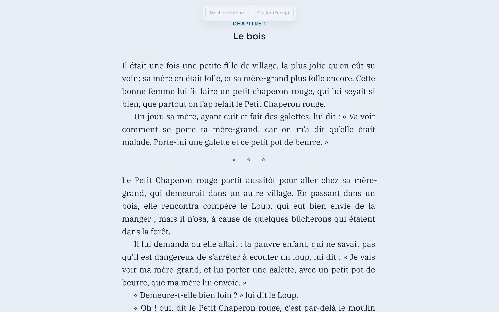
Pendant que tu écris, MondoWrite pose la bonne typographie : guillemets « » avec leurs espaces insécables, espace fine avant ; ! ?, apostrophe ’, points de suspension …, tiret à partir de deux traits d’union. Le réglage Typographie à la frappe choisit : selon la langue, française, anglaise (“ ”) ou aucune.
Remplacer (Ctrl Maj H) cherche un mot dans tout le texte ou dans la scène en cours, avec ou sans les cartes. Respecter la casse et Mot entier affinent la recherche ; le nombre d’occurrences s’affiche pendant la frappe. Le mot remplacé garde ses majuscules. Annuler remet tout comme avant. Les mentions @ ne sont jamais touchées : elles suivent déjà leur carte. Chaque occurrence est listée avec la phrase qui l’entoure : décoche celles à laisser telles quelles.
Renommer partout… (menu ⋯ d’une carte) ne remplace que le nom tel que tu l’as écrit, ou en capitales : un personnage nommé Rose ne change jamais « la rose ». Si le nom est aussi un mot de ton texte (Will, Hope, Pierre…), MondoWrite le signale et décoche les occurrences en début de phrase, où le mot et le nom s’écrivent pareil : relis-les avant de renommer.
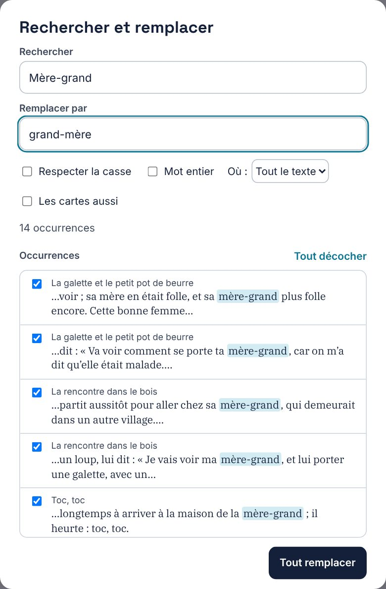
Aller à… (Ctrl G, dans la barre du Manuscrit et du Scénario, et depuis n’importe quelle vue) ouvre une petite fenêtre : tape un numéro pour aller à cette page, ou à la scène qui porte ce numéro dans un scénario (au chapitre de ce numéro dans un roman), ou un mot du titre d’une scène, d’un chapitre, d’un synopsis. Les passages « à reprendre » du manuscrit et les notes [[…]] du scénario y sont aussi. Entrée emmène au premier endroit trouvé, les flèches en choisissent un autre.
Écouter lit le texte à voix haute à partir de l’endroit où tu es, avec les voix installées sur l’appareil (rien ne part en ligne) : dans un scénario, le narrateur lit les en-têtes, l’action et les transitions, et chaque personnage dit ses répliques avec sa propre voix ; dans un roman, le narrateur lit tout, jusqu’à la fin du livre. Le passage lu est surligné et la page le suit. Pause, Reprendre et Arrêter remplacent le bouton pendant la lecture ; taper dans le texte l’arrête aussi.
La flèche à côté d’Écouter ouvre le choix des voix : celle du narrateur, celle de chaque personnage (sinon une voix est choisie pour lui, toujours la même), la vitesse, et, pour un scénario, la lecture des didascalies. Ces choix restent sur l’appareil, puisque les voix ne sont pas les mêmes d’un appareil à l’autre.
Le bouton Vérifier de la barre (avec le nombre de points trouvés) ouvre l’onglet du même nom dans la colonne de droite, à côté de Dans cette scène. Il signale ce qui mérite un coup d’œil, sans jamais rien corriger : un nom écrit presque comme celui d’une fiche (« Inés » pour « Inès »), deux espaces de suite, une espace avant une virgule ou un point. Touche un point pour aller au passage, sélectionné dans le texte. Renommer partout… ouvre « Rechercher et remplacer » avec le bon nom ; Ignorer retire le point de la liste jusqu’à la fermeture de l’app.
Il pose aussi des questions sur l’histoire, jamais des erreurs : le personnage marqué principal n’est pas celui qu’on voit dans le plus de scènes (« Qui suit-on vraiment ? ») ; un personnage principal n’a pas rempli sa case « Veut » ; une série n’a pas encore d’épisode ; un secret n’a pas de révélation prévue, ou éclate sans indice semé avant ; un objet n’est nommé que dans une seule scène (posé sans servir, ou qui sert sans avoir été posé) ; une case du gabarit commence à plus de dix points de sa place habituelle (à partir de six scènes, d’après le ruban du récit : la question mène à sa première scène). Touche la question pour ouvrir la fiche ; C’est voulu l’écarte.
Le bouton Statistiques de la barre (aussi dans la barre du Scénario, et dans le menu Présentation du Mac) ouvre une fenêtre qui compte, dans ton texte, ce qui ne se voit pas en écrivant. Rien n’y est saisi ni enregistré.
Chaque onglet a son Exporter en CSV…, pour un tableur.
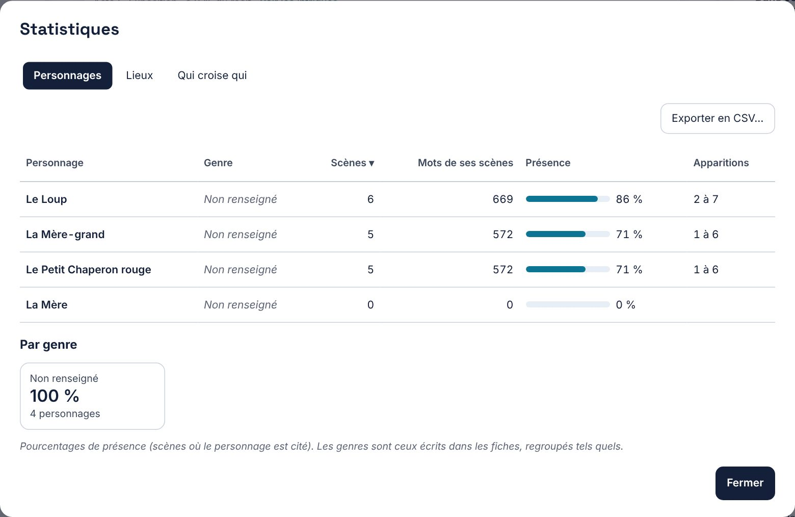
Une carte Scène porte son texte. Sur le canevas, elle montre son synopsis, le début de sa scène et son nombre de mots. Agrandie, elle devient une page où l’on écrit la scène, la même que dans le Manuscrit ; Ouvrir dans le Manuscrit y mène.
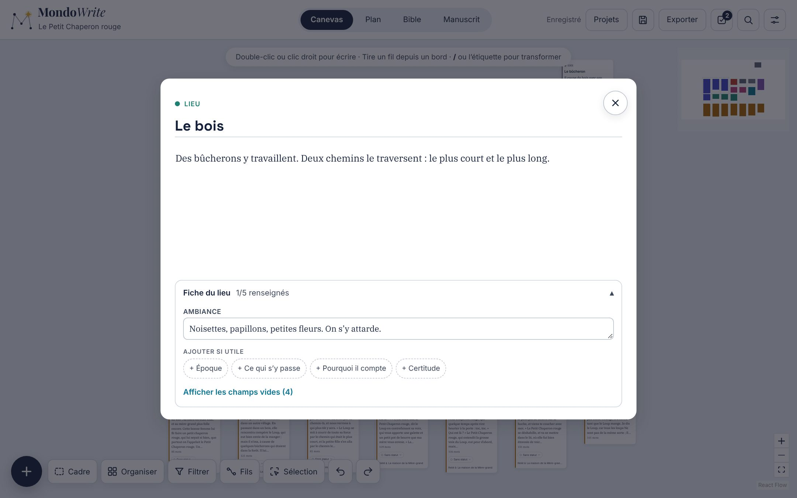
Supprimer une carte Scène ne supprime jamais son texte. Si une scène a perdu sa carte, elle apparaît dans Textes sans carte, au bas de la colonne : Recréer la carte la remet dans le livre.
Dans un projet de scénario, le Manuscrit devient la vue Scénario : un éditeur au format standard du cinéma, qui enregistre le texte en Fountain, un format ouvert lu par Highland, Fade In, WriterSolo, Slugline ou Trelby. Le Plan devient le Séquencier.
Crée un projet en choisissant Un scénario, importe un fichier Fountain ou Final Draft, ou bascule un projet existant dans Réglages › Ce projet › Type de projet. Le vocabulaire suit : les Lieux s’appellent Décors, le titre d’une carte Scène est son en-tête (« INT. PHARE - NUIT »), et la longueur se compte en pages et en minutes (une page vaut environ une minute), affichée dans la barre du haut.
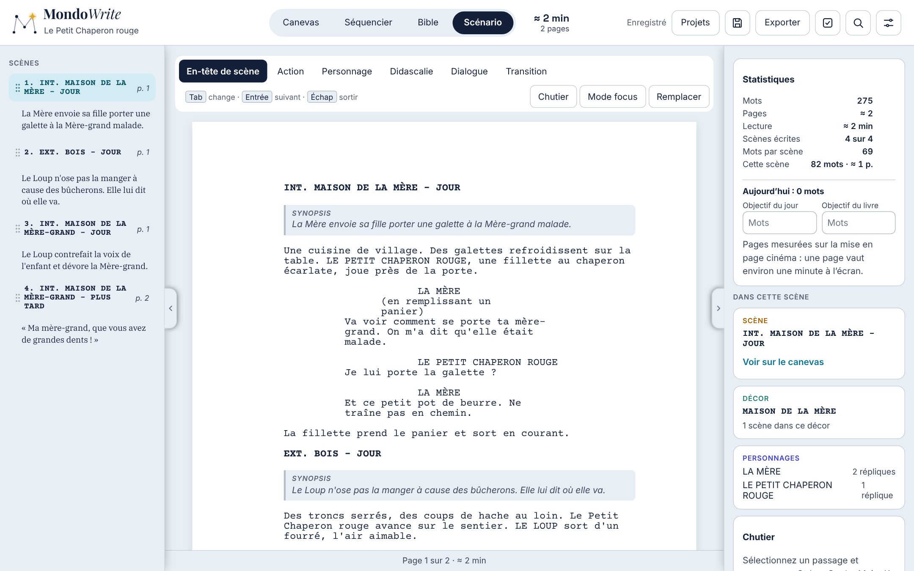
Le scénario est fait d’éléments : En-tête de scène, Action, Personnage, Didascalie, Dialogue, Transition. La barre au-dessus de la feuille montre l’élément en cours et permet d’en changer d’un clic. Au clavier :
Sur iPhone, la barre est repliée en haut de la feuille : elle ne montre que le type de l’élément en cours. Touche-le pour ouvrir le volet (les six éléments, puis Chutier, Mode focus, Remplacer et Vérifier) ; il se referme dès que tu choisis un élément. La fenêtre Statistiques, trop large pour un téléphone, n’y est pas proposée : ouvre-la sur iPad ou sur ordinateur.
L’app reconnaît ce que tu tapes : une ligne qui commence par « int. » ou « ext. » devient un en-tête, une parenthèse sous un personnage une didascalie. L’élément en cours d’écriture passe en majuscules quand il le faut. La feuille est découpée en vraies pages (Letter ou A4), avec le numéro de page et la durée en bas.
Pendant que tu écris un en-tête ou un nom de personnage, MondoWrite propose les décors et les personnages de la Bible, les moments (JOUR, NUIT…), les extensions (V.O., H.C., SUITE). Choisis avec les flèches et Entrée. Un nouveau nom propose Créer la fiche… ou Créer le décor….
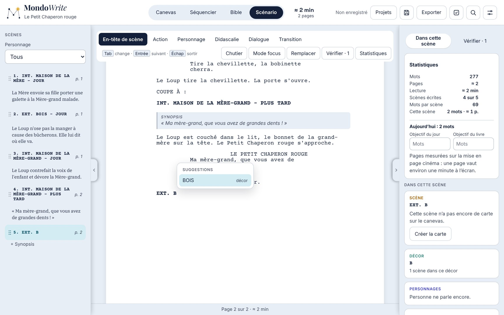
Une scène ou un personnage écrits dans le scénario reçoivent leur carte sur le canevas (avec la carte du décor et le fil « se passe à »), sans rien recopier.
À gauche, la liste des scènes avec leur synopsis et leur page ; un clic y mène. Elles se réordonnent en les glissant par leur poignée (⋮⋮ à gauche de chaque scène), avec leurs flèches ou Alt ↑ ↓. + Synopsis ajoute un synopsis à la scène (une ligne Fountain = …, ignorée à l’impression). À droite, Dans cette scène montre la carte de la scène, son décor (avec le nombre de scènes qui s’y passent) et les personnages qui parlent, avec leur nombre de répliques. Les deux colonnes se replient avec les poignées des bords de la feuille, comme dans le Manuscrit (et deviennent des tiroirs sur un écran étroit).
En haut de la feuille, la page de titre se remplit sur place : titre, mention (« Écrit par »), auteur, source, contact, date de la version. Le nom de ton profil y est mis pour chaque nouveau scénario.
La numérotation des scènes et le soulignement des en-têtes (à l’écran, dans le PDF et dans l’export Final Draft), ainsi que le format de page (US Letter ou A4), se règlent dans Réglages › Ce projet. Dans la barre, Chutier, Mode focus et Remplacer fonctionnent comme dans le Manuscrit.
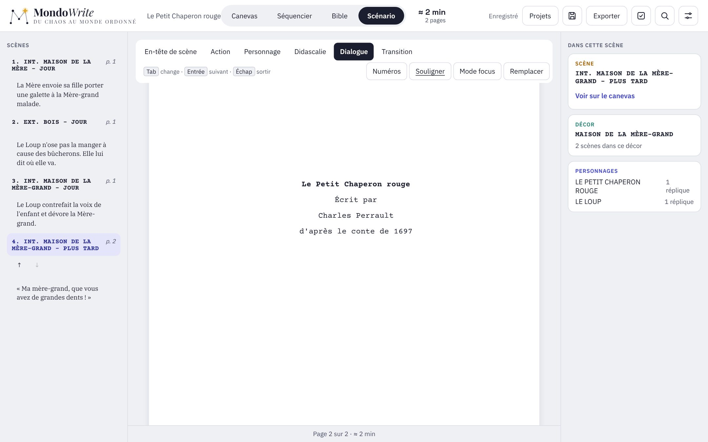
La colonne de droite commence par les statistiques du scénario : mots, pages (mesurées sur la mise en page cinéma), durée à l’écran, scènes écrites, et l’objectif du jour et du projet. Les mots écrits au scénario comptent dans la progression du jour et les jours d’affilée, comme au Manuscrit. Dessous, Dans cette scène, puis le Chutier : sélectionne un passage et appuie sur Ctrl Maj K pour le mettre de côté, Remettre à sa place le ramène.
Le Mode focus ne garde que le texte, sans coupures de page : Machine à écrire garde la ligne en cours à la même hauteur, et la mise en valeur choisie dans les Réglages (la phrase, la ligne ou le paragraphe) estompe le reste. Échap en sort.
Comme dans le Manuscrit, Vérifier ouvre un onglet de points à regarder : noms de personnage presque identiques (« CHAPPERON » à côté de « CHAPERON », avec le nombre de répliques de chacun), personnage qui parle sans carte (Créer la carte ; une faute de frappe sur un nom connu est signalée parmi les noms presque identiques, avec Renommer partout…), action de plus de 4 lignes, en-tête sans INT./EXT. ou sans moment, personnage sans réplique, espaces en trop, et les questions sur l’histoire (personnage principal, case « Veut », série sans épisode, avec Nouvel épisode, secrets, objets, et la longueur du pilote : environ une page par minute, d’après le format choisi sur la couverture, par exemple 47 à 60 pages pour des épisodes de 52 minutes). Un point se touche pour aller à l’élément ; rien n’est changé sans toi.
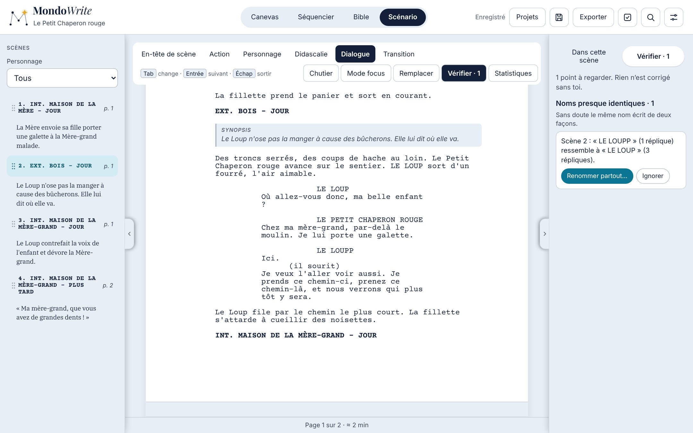
En haut de la liste des scènes, choisis un Personnage : Ses scènes ne garde que les scènes où il parle ou est nommé dans l’action ; Ses répliques estompe en plus tout ce qu’il ne dit pas. Le texte estompé reste modifiable, et la feuille passe en continu le temps du filtre. Le bandeau dans la barre, ou Tous, rend tout le scénario. Depuis sa fiche dans la Bible, Voir ses répliques dans le scénario pose ce filtre directement.
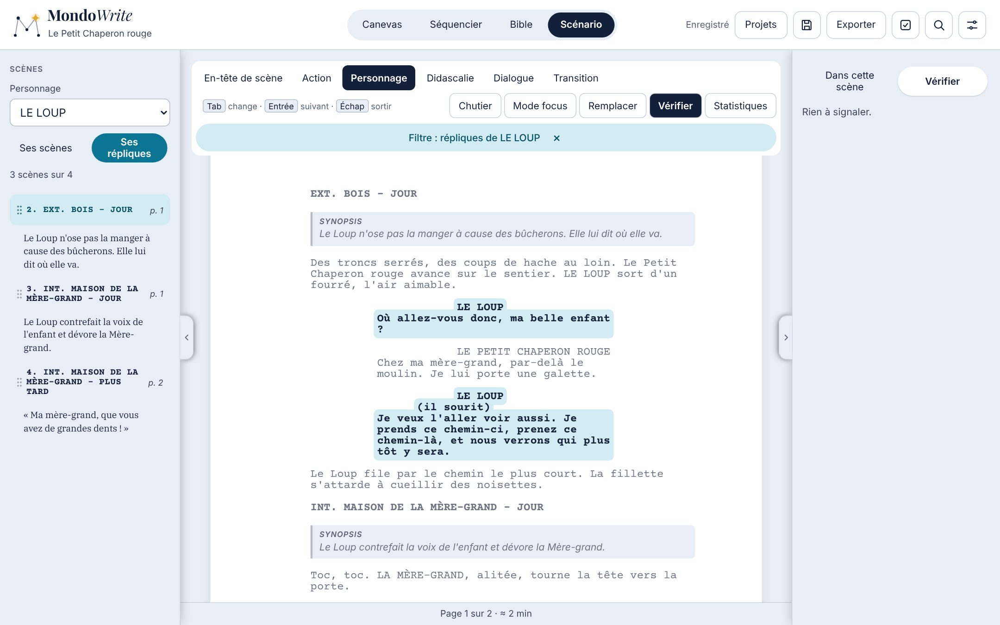
Le bouton Statistiques de la barre ouvre la même fenêtre que dans un roman (voir « Les statistiques du projet »), lue dans le scénario. L’onglet Décors est le dépouillement d’un tournage : les pages de chaque décor (une page vaut environ une minute), ses scènes en intérieur ou en extérieur, de jour ou de nuit, et les personnages qu’on y croise. On y voit d’un coup d’œil ce qui coûtera cher (des nuits en extérieur) ou un décor qui ne sert qu’une fois. Un décor écrit sans carte a sa propre ligne.
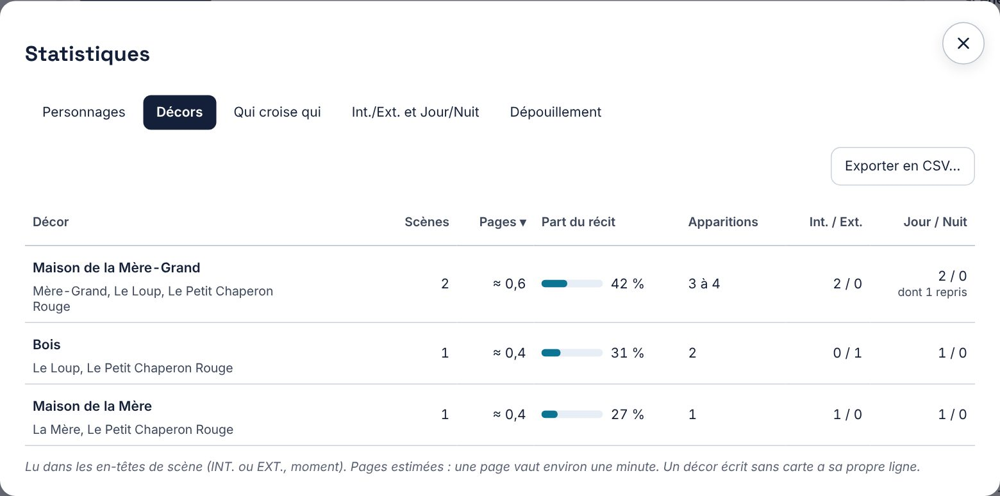
Dans Qui croise qui, une case touchée propose aussi Voir ces scènes dans le scénario : le filtre ne garde alors que les scènes où les deux personnages se croisent.
L’onglet Int./Ext. et Jour/Nuit fait le compte sur tout le scénario. Une scène « PLUS TARD », « CONTINU », « MÊME MOMENT », ou sans moment, reprend le jour ou la nuit de la scène précédente : elle est comptée « reprise », sans que le texte soit touché. Une scène INT./EXT. compte des deux côtés.
Le séquencier liste les scènes dans l’ordre du scénario, avec leur synopsis, leurs personnages, leur longueur et leur statut. Glisse une scène ou utilise ses flèches pour changer l’ordre du scénario lui-même. Sur chaque scène, ↗ montre sa carte sur le canevas et ✎ l’ouvre dans le Scénario.
Le menu Gabarit propose : aucun, trois actes, Save the Cat, huit séquences (le film en huit séquences d’un quart d’heure), épisode de série (pré-générique, quatre actes, épilogue), et les structures du Plan (voyage du héros, cercle de Dan Harmon, pyramide en cinq actes, six étapes, sept points, kishōtenketsu, romance, polar), ainsi que tes gabarits (voir le Plan). Les cases du gabarit sont des sections du fichier Fountain, que les autres logiciels voient comme de simples sections ; range les scènes avec Ranger dans, les flèches ou en les glissant. Chaque case affiche son rang (« Case 3 sur 15 »), un grand titre, son aide et sa durée ; tes propres sections restent en plus petit, sous les cases.
Agrandie, une carte Scène d’un scénario montre son en-tête, son synopsis et un éditeur limité au texte de cette scène, avec la même barre des éléments.
MondoWrite fonctionne entièrement sans IA. Si tu en branches une, elle pose des questions et fait des propositions ; elle n’écrit jamais ton texte, et rien ne change sans ton accord.
Dans Réglages › IA (facultative), choisis un Service :
/v1 marche aussi).Tester et lister les modèles vérifie la connexion et propose la liste des modèles disponibles. Le bouton IA apparaît alors dans la barre du haut. Si la liste n’a pas pu être chargée, un message le dit : touche de nouveau le bouton pour réessayer.
Pendant qu’elle travaille, un bouton Annuler l’arrête (menu IA, galerie, assistant personnage). L’IA nomme toujours les cartes par leur titre. En cas de problème, un message dit ce qui ne va pas : service injoignable, clé refusée, modèle inconnu, limite atteinte, réponse trop longue à venir.
Par défaut, l’IA de MondoWrite questionne et propose, elle n’écrit pas à ta place. Le mode Atelier, activé projet par projet dans Réglages › Ce projet › Mode Atelier, lui permet de proposer du texte. Un repère Atelier le rappelle dans la barre du haut.
Tout ce que tu acceptes est souligné en pointillé, listé dans À faire (Passages de l’IA) et compté dans les Statistiques (Texte touché par l’IA). Quand tu as retravaillé un passage, Je l’ai repris retire la marque. Chaque proposition acceptée ajoute aussi une ligne au fichier ia-journal.md du projet (date, action, carte ou scène, service et modèle, nombre de mots) : c’est ce qui t’aide à répondre à Amazon KDP, qui demande de déclarer le texte généré par l’IA. Une version de MondoWrite antérieure à la 1.8.0 garde le texte mais perd la marque si elle réenregistre le projet.
Le bouton Exporter fabrique tes fichiers dans l’app, sans aucun outil externe. Choisis le format : le fichier est enregistré là où tu le décides.
Les scènes d’un même chapitre forment un chapitre, séparées par « * * * ». Les pages du livre (dédicace, prologue…) sont à leur place.
Livre broché (KDP)… prépare ton livre pour l’impression à la demande (Amazon KDP) : un PDF d’intérieur prêt à téléverser, et un gabarit de couverture à sa mesure.
Les réglages sont gardés avec le projet. Dès l’ouverture de la fenêtre et à chaque changement, le livre est mis en page : la fenêtre annonce le nombre de pages et la largeur du dos, et prévient si KDP refuserait le livre (moins de 24 pages, ou trop de pages pour ce papier).
Enregistrer le gabarit de couverture (PDF) donne une page à la taille exacte de ta couverture complète (quatrième, dos, première), fond perdu compris : le dos calculé d’après le nombre de pages et le papier, les zones sûres où garder le texte, la place du code-barres que KDP ajoute, et les mesures écrites dessus. Sers-t’en comme calque guide dans ton logiciel de dessin, puis masque-le avant d’exporter ta couverture. Sous 79 pages, KDP n’accepte pas de texte sur le dos.
Remplis les pages « Page de titre », « Mentions légales », « Dédicace » ou « Remerciements » dans le Manuscrit pour qu’elles remplacent celles que MondoWrite fabrique. Vérifie toujours l’aperçu de KDP avant de publier.
La fenêtre Exporter le scénario en PDF montre la première page telle qu’elle sortira, et se met à jour à chaque choix :
[[…]], en gris. Tout décoché (sauf la page de titre), c’est le format standard, celui qu’on envoie.{date}, {titre} et {auteur} sont remplacés à l’export (« Version 3 · {date} »), et un Filigrane en travers de la page (« Confidentiel »). Le numéro de page reste en haut à droite.Ces choix sont gardés dans le projet : la prochaine fois, la fenêtre s’ouvre telle que tu l’as laissée.
Bible… ouvre la fenêtre Exporter la Bible. Trois questions suffisent, et l’aperçu, à droite, montre le vrai PDF, page par page, refait à chaque changement.
Pour un tiers, le dossier reste court : au-dessus de l’aperçu, le nombre de pages est suivi d’un repère, « 15 à 20 pages attendues par la plupart des commissions », jamais d’un blocage. Pourquoi ce destinataire ajoute une phrase à la fin de la note d’intention (« Pourquoi cette chaîne ») : enregistre un réglage par destinataire. Ton parcours et tes œuvres (profil d’auteur) font une page « L’auteur » à la fin, précédée de « Pourquoi moi » pour une série. La voix et la consigne d’écriture des personnages restent dans la bible de travail.
Une bible de série reçoit en plus l’arène et ce qui précède le pilote, ce qui tient les personnages ensemble, la mécanique, la question et la fin de la saison, les épisodes (une liste courte : numéro, titre, repère, synopsis, personnage pivot, regroupés par saison), les saisons suivantes, les règles d’écriture et, pour un tiers, les autres supports. Les groupes, objets, événements et règles du monde suivent les lieux dans l’Univers ; les secrets suivent les intrigues dans la Structure. Deux options, décochées pour un producteur : Grille des fils (quelles intrigues dans quels épisodes, ou dans quelles parties du pilote s’il n’y a pas d’épisode) et Page « En un coup d’œil » (les accroches des personnages et les épisodes où chacun paraît). Joindre les premières pages du pilote ajoute à la fin les dix premières pages du scénario, au format standard. Pour un éditeur, Joindre les premières pages du manuscrit fait de même avec ton roman, au format manuscrit. Le rendu proposé d’office est Sobre pour un producteur, Éditorial pour un éditeur.
Tes choix sont gardés avec le projet. Réglage permet de les enregistrer sous un nom (« Pour l’éditrice », « Atelier ») et de les retrouver. Le fichier porte la date du jour (« Dossier de présentation - Titre - 2026-10-26 ») : chaque envoi garde sa version. Word et Markdown gardent les parties choisies et leur ordre, pas le rendu.
Le canevas s’exporte en image PNG de tout le tableau, en PDF standard (A4, à envoyer) ou grand format (A1, à imprimer et afficher au mur), ou en texte des cartes (Word, Markdown), un cadre par partie.
Un projet MondoWrite est un dossier ordinaire, rempli de fichiers texte que tu peux ouvrir, copier, sauvegarder ou versionner comme tu veux.
| Fichier ou dossier | Contenu |
|---|---|
cosmos.json | Le titre, le type, la place des cartes, les fils, les cadres, le plan, les objectifs, la couverture du projet, les réglages du livre broché. |
cartes/ | Une carte par fichier Markdown, avec un petit en-tête (type, titre, image, fiche). |
manuscrit/ | Le texte de chaque scène d’un roman, en Markdown. |
scenario.fountain | Le texte du scénario, en Fountain. |
medias/ | Les images et les PDF des cartes. |
corbeille/ | Les cartes supprimées, en attendant d’être remises ou effacées. |
markdown/ | Des copies lisibles du manuscrit, de la bible et du canevas, avec une version par jour. |
Une mention d’une carte s’écrit comme un lien Markdown ordinaire : [@Le Loup](cosmos:…). Tout reste lisible dans n’importe quel éditeur de texte (le nom « cosmos » vient de l’ancien nom de l’app).
Après chaque enregistrement, l’app de bureau écrit dans markdown/ le manuscrit (ou rien pour un scénario, qui est déjà du texte), la bible et le canevas en Markdown, avec des liens entre les fiches. Une copie datée est gardée chaque jour dans markdown/versions/ : trente jours, puis une par mois. Ces copies ne sont jamais relues : écris toujours dans l’app. Le réglage Copies Markdown dans le dossier du projet (Réglages › Ce projet) les arrête.
Un projet reste un dossier ordinaire : c’est un service de synchronisation qui le copie d’un appareil à l’autre, et MondoWrite relit les changements. Choisis selon tes appareils :
| Tes appareils | Méthode conseillée |
|---|---|
| iPhone, iPad et Mac | iCloud Drive, activé par défaut : rien à régler. |
| Avec un PC Windows ou Linux | Un dossier Dropbox choisi sur chaque appareil. |
| Échange ponctuel | Un fichier .zip. |
projets). La case Réglages › Synchroniser les projets avec iCloud Drive est cochée par défaut sur iPhone et iPad, et sur le Mac dès qu’iCloud Drive contient ce dossier. Les projets créés sur un appareil apparaissent tout seuls sur la page des projets des autres, sans aller les chercher. Il faut être connecté au même compte iCloud, avec iCloud Drive activé, sur chaque appareil. Sans iCloud Drive, les projets restent sur l’appareil et les Réglages l’indiquent. Si iCloud Drive est coupé après coup, la page des projets prévient que les projets iCloud ne s’affichent plus : ils ne sont pas perdus et reviennent quand il est réactivé. Sur le Mac, si les projets tardent à arriver, Retrouver le dossier… ouvre le dossier iCloud de MondoWrite : choisis-y projets. Il arrive qu’iCloud crée un doublon « projets 2 » quand deux appareils créent ce dossier en même temps : la page des projets le signale, et Les remettre avec les autres range ses projets dans projets.OneDrive ne convient pas pour synchroniser avec un iPhone ou un iPad : iOS ne laisse pas une app choisir un dossier OneDrive (il apparaît grisé dans le sélecteur). Sur ordinateur, un dossier OneDrive fonctionne comme dossier cloud, mais seulement entre ordinateurs. Pour relier un PC et un iPhone, utilise Dropbox.
Sur iPhone et iPad, l’app relit le projet ouvert toutes les 20 secondes et quand tu reviens dedans. Sur ordinateur, elle voit les changements dès qu’ils arrivent dans le dossier.
N’écris pas sur deux appareils en même temps : la synchronisation prend parfois quelques secondes. Si le même fichier a changé des deux côtés, l’app garde les deux versions et te laisse choisir.
Pour supprimer un projet de tous tes appareils : sur iPhone et iPad, la croix de la page des projets ; sur ordinateur, mets son dossier à la corbeille (dans le Finder : iCloud Drive › MondoWrite › projets).
Tu peux modifier un fichier du projet avec un autre logiciel, ou depuis un autre ordinateur par un dossier synchronisé. L’app le remarque et reprend la nouvelle version. Si le même fichier a changé des deux côtés, aucun n’est écrasé : la version du disque est gardée, la tienne est enregistrée à côté (« … (MondoWrite).md »), et un bandeau te laisse choisir : Garder ma version ou Garder celle du disque.
Un message sous la barre du haut dit pourquoi (disque plein, droits insuffisants, dossier introuvable) et propose : Réessayer ; Indiquer le dossier du projet… s’il a été déplacé ou renommé ; Exporter une copie… (tout le projet dans un fichier .zip, pour ne rien perdre) ; ou Revenir aux projets sans enregistrer.
Place tes projets dans un dossier synchronisé (iCloud Drive, Dropbox, OneDrive) ou sauvegarde-les régulièrement. Comme ce sont des fichiers texte, ils prennent très peu de place.
Le bouton Réglages (les curseurs, en haut à droite) ouvre trois colonnes.
| Réglage | Effet |
|---|---|
| Ce projet | Type de projet (roman ou scénario) ; pour un scénario, le format de page et les options de numérotation ; les copies Markdown ; la Corbeille. |
| Langue | Français ou anglais. À la première ouverture, la langue du système. |
| Apparence | Comme le système, claire ou sombre. |
| Typographie à la frappe | Selon la langue, française, anglaise ou aucune. |
| Correcteur orthographique | Sauf manuscrit et scénario (à la demande), partout ou nulle part. |
| Suggestions et correction automatique du clavier | Mots proposés et corrigés par le clavier du système, ou rien. |
| Nom d’auteur | Lu dans ton profil ; Modifier mon profil… ouvre la fenêtre Toi, l’auteur. |
| Photos libres | Les clés Pixabay et Unsplash (Openverse n’en demande pas). |
| IA (facultative) | Le service, la clé ou l’adresse, le modèle. |
| Mises à jour | La recherche au lancement et le bouton de recherche (app de bureau). |
En bas : Visite guidée, Guide de l’utilisateur (ce guide, ouvert dans ton navigateur), Raccourcis clavier et À propos de MondoWrite. Le guide s’ouvre aussi partout avec F1, directement au chapitre de la vue où tu es, et, sur Mac, depuis le menu Aide de la barre des menus, qui suit la langue de l’app. La langue, l’apparence, les clés et le profil sont des réglages de l’appareil ; le type de projet et le livre broché sont gardés dans le projet.
Toute l’app existe en sombre, jusqu’à la page du manuscrit. Choisis Sombre, ou Comme le système pour suivre ton ordinateur.
Sur un écran tactile, tout se fait au doigt : un appui long sur une carte la soulève (elle est sélectionnée, avec une ombre portée) pour la déplacer, un appui long dans un cadre libre soulève le cadre avec ses cartes, toucher l’étiquette d’une carte change son type, le bouton Sélection permet d’entourer des cartes, et chaque action déclenchée par un glisser-déposer a aussi un bouton.
Sur un téléphone, MondoWrite devient un carnet : trois onglets en bas, Manuscrit (ou Scénario), Bible et Carnet. Le canevas, le Plan, les exports et le rangement des rubriques de la Bible restent sur l’iPad et l’ordinateur, où ils ont la place. C’est la largeur de l’écran qui décide : un iPhone pliant ouvert, ou une fenêtre élargie, retrouve tout.
Dans le Carnet, choisis le type de ta note (Idée, Question, Personnage, Lieu, Objet, Thème), écris-la, puis Garder. La première ligne devient le titre, la suite le texte ; une adresse web seule fait une carte Lien. La note est aussitôt une carte du projet : elle est dans la Bible, et sur le canevas de tes autres appareils.
Tes notes attendent dans À ranger, sous le champ : touche une note pour ouvrir sa fiche, l’icône d’image pour y joindre une photo, la coche pour la dire rangée, la corbeille pour la jeter. Sur l’iPad ou l’ordinateur, le bouton À ranger · N du canevas les liste, avec un pointillé autour de chacune sur le canevas ; toucher une note de la liste la met en avant. Dès que tu la déplaces sur le canevas ou que tu la relies à une autre carte, elle quitte la liste.
La liste complète s’ouvre à tout moment avec Ctrl /. Sur Mac, Ctrl devient ⌘, Alt devient ⌥.
| Ctrl / | La liste des raccourcis |
| Ctrl 1 … 4 | Canevas, Plan, Bible, Manuscrit |
| Ctrl F | Rechercher une carte ou un passage |
| Ctrl + − 0 | Zoom de la page (Manuscrit, Scénario) : agrandir, réduire, taille normale |
| Ctrl Maj H | Rechercher et remplacer dans le texte |
| Ctrl G | Aller à une page, une scène, un chapitre |
| Ctrl Maj L | À faire |
| Ctrl S | Enregistrer |
| Ctrl Z · Ctrl Maj Z | Annuler · Rétablir |
| N | Nouvelle carte |
| C | Nouveau cadre (autour de la sélection) |
| / | Changer le type (en début de ligne, ou dans un titre vide) |
| @ ou [[ | Citer une autre carte |
| Ctrl Entrée | Agrandir la carte choisie |
| Alt ← → | Élargir ou rétrécir la carte |
| Maj + glisser | Entourer plusieurs cartes |
| Ctrl + clic | Ajouter une carte à la sélection |
| Ctrl A · Échap | Tout sélectionner · Tout désélectionner |
| Suppr | Mettre la sélection à la corbeille |
| Ctrl C · Ctrl V | Copier les cartes choisies · Coller des cartes, un lien, une image ou un texte (dans la carte qui a le focus) |
| Ctrl D | Dupliquer les cartes choisies |
| Ctrl B · Ctrl I | Gras · Italique |
| Ctrl Maj D | Barré |
| Ctrl Alt 1 … 3 | Titre, intertitre |
| Ctrl Maj 8 · 7 | Liste à puces · Liste numérotée |
| Ctrl Maj 9 | Case à cocher |
| Ctrl Maj B | Citation |
| Ctrl Maj X | Marquer « à reprendre » |
| ** * # - [ ] | Markdown à la frappe et au collage |
| Entrée Entrée | Couper la scène (sur une ligne vide) |
| Entrée Entrée Entrée | Nouveau chapitre |
| / + nom | Créer une fiche personnage ou lieu (ou sélectionner un nom puis /) |
| Ctrl Maj K | Mettre le passage sélectionné au chutier |
| Ctrl Maj F · Échap | Mode focus · En sortir |
| Alt ↑ ↓ | Déplacer la scène (colonne des scènes) |
| Tab · Maj Tab | Changer d’élément |
| Entrée | Élément suivant |
| Échap | Barre des éléments (ou sortie du mode focus) |
| Ctrl Maj K | Mettre le passage sélectionné au chutier |
| Alt ↑ ↓ | Déplacer la scène (colonne des scènes) |
Dans le dossier que tu as choisi en créant le projet. Le chemin n’est pas affiché dans l’app : retrouve-le avec Ouvrir un dossier…, ou cherche le fichier cosmos.json sur ton ordinateur.
Choisis le même dossier cloud (Dropbox, iCloud Drive ou OneDrive) sur les deux ordinateurs avec Choisir un dossier cloud… : leurs projets apparaissent des deux côtés. Entre deux Mac, iCloud le fait tout seul. Voir « Synchroniser entre appareils ». Évite d’écrire sur les deux en même temps : en cas de modification des deux côtés, l’app garde les deux versions et te laisse choisir.
Ctrl Z, ou le bouton Annuler du message, ou Réglages › Corbeille › Remettre. Le texte d’une scène n’est jamais effacé avec sa carte.
Réglages › Ce projet › Type de projet. Les cartes, la Bible et les fichiers ne changent pas. Au premier passage, les scènes deviennent des en-têtes de scénario et leur synopsis les accompagne ; le texte en prose reste dans le manuscrit, disponible si tu reviens au roman.
KDP demande au moins 24 pages. Un format plus petit (5 × 8) ou une table des matières et des pages de fin ajoutent quelques pages ; sinon, le texte est simplement trop court pour un livre broché.
Pour Ollama ou LM Studio, vérifie que le logiciel est lancé et qu’un modèle est chargé, puis Tester et lister les modèles. Pour un service en ligne, vérifie la clé d’API et ton crédit. Le message d’erreur dit ce qui bloque.
Le modèle choisi doit savoir lire les images (par exemple gemma3, qwen2.5vl ou llava avec Ollama).
Oui. MondoWrite est un logiciel libre (licence GNU AGPL 3.0 ou ultérieure) : tu peux l’utiliser, l’étudier, le modifier et le partager. Le code source est sur github.com/sebastienpiconnier/MondoWrite. Il est inspiré entre autres par NEO, le logiciel d’écriture de Hugh Howey.